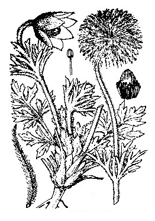
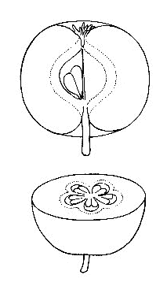

| 植物知識 | |
| 牧野 富太郎 | |
| (2012) | |
植物知識
牧野富太郎
まえがき
花は、率直
にいえば生殖器
である。有名な蘭学者
の宇田川榕庵
先生は、彼の著
『植学啓源
』に、「花は動物の陰処
の如
し、生産蕃息
の資
て始まる所なり」と書いておられる。すなわち花は誠
に美麗
で、且
つ趣味に富
んだ生殖器であって、動物の醜
い生殖器とは雲泥
の差があり、とても比
べものにはならない。そして見たところなんの醜悪
なところは一点もこれなく、まったく美点に充
ち満
ちている。まず花弁
の色がわが眼を惹
きつける、花香
がわが鼻を撲
つ。なお子細
に注意すると、花の形でも萼
でも、注意に値
せぬものはほとんどない。
この花は、種子
を生ずるために存在している器官である。もし種子を生ずる必要がなかったならば、花はまったく無用の長物
で、植物の上には現
れなかったであろう。そしてその花形
、花色
、雌雄蕊
の機能は種子を作る花の構
えであり、花の天から受け得た役目である。ゆえに植物には花のないものはなく、もしも花がなければ、花に代わるべき器官があって生殖を司
っている。（ただし最も下等なバクテリアのようなものは、体が分裂して繁殖
する。）
植物にはなにゆえに種子が必要か、それは言わずと知れた子孫
を継
ぐ根源であるからである。この根源があればこそ、植物の種属は絶
えることがなく地球の存する限り続くであろう。そしてこの種子を保護しているものが、果実である。
草でも木でも最も勇敢
に自分の子孫
を継
ぎ、自分の種属を絶
やさぬことに全力を注
いでいる。だからいつまでも植物が地上に生活し、けっして絶滅
することがない。これは動物も同じことであり、人間も同じことであって、なんら違ったことはない。この点、上等下等の生物みな同権である。そして人間の子を生むは前記のとおり草木
と同様、わが種属を後代
へ伝えて断
やさせぬためであって、別に特別な意味はない。子を生まなければ種属はついに絶
えてしまうにきまっている。つまりわれらは、続かす種属の中継
ぎ役をしてこの世に生きているわけだ。
ゆえに生物学上から見て、そこに中継
ぎをし得なく、その義務を怠
っているものは、人間社会の反逆者であって、独身者はこれに属すると言っても、あえて差しつかえはあるまいと思う。つまり天然自然の法則に背
いているからだ。人間に男女がある以上、必ず配偶者を求むべきが当然の道ではないか。
動物が子孫を継
ぐべき子供のために、その全生涯を捧
げていることは蟬
の例でもよくわかる。暑い夏に鳴きつづけている蟬
は雄蟬
であって、一生懸命
に雌蟬
を呼んでいるのである。うまくランデブーすれば、雄蟬
は莞爾
として死出
の旅路
へと急ぎ、憐
れにも木から落ちて死骸
を地に曝
し、蟻
の餌
となる。
しかし雌蟬
は卵を生むまでは生き残るが、卵を生むが最後、雄蟬
の後
を追って死んでゆく。いわゆる蟬
と生まれて地上に出
でては、まったく生殖のために全力を打ち込んだわけだ。これは草でも、木でも、虫でも、鳥でも、獣
でも、人でも、その点はなんら変わったことはない、つまり生物はみな同じだ。
われらが花を見るのは、植物学者以外は、この花の真目的を嘆美 するのではなくて、多くは、ただその表面に現れている美を賞観 して楽しんでいるにすぎない。花に言わすれば、誠 に迷惑至極 と歎 つであろう。花のために、一掬 の涙があってもよいではないか。
花
ボタン
ボタン、すなわち牡丹は中国の原産であるが、今は日本はもとより西洋諸国でも栽培
している。
だれでも知っているように、きわめて巨大な美花
を開くので有名である。今その栽培してあるものを見ると、その花容
、花色
すこぶる多様で、紅色、紫色、白色
、黄色などのものがあり、また一重咲
き、八重咲
きもあって、その満開
を望むと吾人
はいつも、その花の偉容
、その花の華麗
に驚嘆
を禁じ得ない。
牡丹
に対し中国人は丹色
の花、すなわち赤色
のものを上乗
としており、すなわち牡丹に丹の字を用いているのは、それがためである。また牡丹の牡は、春に根上からその芽が雄々
しく出るから、その字を用いたとある。つまり牡は、盛
んな意味として書いたものであろう。今はどうか知らぬが、昔は中国のある地方では、それが荊棘
のように繁
っていて、原住民はこれを伐採
し燃料にしたと書物に書いてある。
牡丹はキツネノボタン科に属するが、この科のものはみな草本
であるにかかわらず、独
りこの牡丹
は落葉灌木
である。草木
なる芍薬
に近縁
の種類で、Paeonia suffruticosaAndr
. の学名を有している。この種名の suffruticosa は、亜灌木
の意である。また Paeonia moutanSims
. の学名もあるが、この種名の Moutan は牡丹の意である。そしてその属名の Paeonia は、Paeon という古代の医者の姓名に基
づいたものである。牡丹根皮は薬用となるので、それでこの医者の名をつけた次第
であろう。
日本では牡丹の音ボタンが、今日の通名となっている。
古歌にはハツカグサ、ナトリグサの名があり、古名にはフカミグサの名がある。右のハツカグサは二十日
草で、これは昔、藤原忠通
の歌の、
咲きしより散り果つるまで見しほどに
花のもとにて廿日
へにけり
に基づいたもので、つまり牡丹の花の盛りが久しいことを称
えたものだ。
一つの花が咲き、次の蕾
が咲き、株上のいくつかの花が残らず咲き尽
くすまで見て、二十日
もかかったというのであろう。いくら牡丹でも、一輪
の花が二十日
間も萎
まず咲いているわけはない。
中国では、牡丹
が百花
のうちで第一だから、これを花王
と唱
えた。さらに富貴花
、天香国色
、花神
などの名が呼ばれている。宋
の欧陽修
の『洛陽牡丹
の記』は有名なものである。
牡丹は、樹
の高さ通常は九〇～一二〇センチメートルばかりに成長し、まばらに分枝
する。春早く芽が出
で、葉は互生
して葉柄
があり、二回、三回分裂して複葉
の姿をなしている。五月、枝端
に大なる花を開き、花径
およそ二〇センチメートルばかりもある。花下
にある五萼片
は宿存
して花後
に残り、八片
ないし多片の花弁
ははじめ内
へ抱
え込み、まもなく開き、香
りを放って花後に散落
する。花中
に多雄蕊
と、細毛
ある二ないし五個の子房
とがあり、子房は花後に乾
いた果実となり、のち裂
けて大きな種子が露
れる。
多くの年数を経
た古い牡丹にあっては、高さが一八〇センチメートル以上にも達して幹
が太くなり、多くの枝
を分かち、たくさんな葉を繁
らし、花が一株上に数百輪
も開花する。私は先年、この巨大な牡丹を飛驒高山
市の奥田邸
で見たのだが、この株
はたぶん今でも健在しているであろう。これはその土地で、「奥田の牡丹
」と評判せられて有名なものであった。たぶんこんな大きな牡丹は、今日
日本のどこを捜しても見つからぬであろう。もし果たしてそうだとすれば、これは日本一の牡丹であると折
り紙
をつけてよかろう。もしも高山
市へ赴
かれる人があったら、一度かならずこの大牡丹
を見て来
られてよいと思う。

ボタンの図
シャクヤク
和名
として今日
わが邦
では、芍薬をシャクヤクと字音
で呼んでいることは、だれもが知っているとおりであるが、しかし昔はこれをエビスグサ、あるいはエビスグスリと称
え、古歌
ではカオヨグサといった。
エビスグサは夷草
、エビスグスリは夷薬
、ともに外国から来たことを示している。カオヨグサは顔美草
で、花が美麗
だから、そういったものであろう。
元来
、芍薬
の原産地は、シベリアから北満州〔中国の東北地方の北部〕の原野である。はじめシベリアで採
った白花品
へ、ロシアの学者のパラスが、Paeonia albifloraPallas
の学名をつけてその図説を発表したが、満州〔中国の東北地方一帯〕に産するものには、淡紅花
のものが多い。しかしそれは、もとより同種である。種名の albiflora は、白花の意である。
日本に作っている芍薬
は、中国から伝わったものであろう。今は広く国内に培養
せられ、その花が美麗
だから衆人
に愛せられる。中国では人に別れる時、この花を贈る習慣がある。つまり離別
を惜
しむ記念にするのであろう。
芍薬は宿根性
［＃ルビの「しゅっこんせい」は底本では「しゅっこんそう」］
の草本
で、その根を薬用に供
する。春に根頭
から勢
いのよい赤い芽を出し、見てまことに気持がよい。充分
成長すると、高さはおよそ九〇センチメートル内外に達し、その直立せる茎
は通常まばらに分枝
する。葉は茎
に互生
し、再三出式に分裂している。各枝端
に一花ずつ開き、直径はおよそ一二センチメートル内外もあろう。花下
に五片
の緑萼
があるが、蕾
の時には円
く閉じている。花弁
は平開し、およそ十片
内外もあるが、しかし花容
、花色種々多様
で、何十種もの園芸的変わり品がある。花心
に黄色の多雄蕊
と、三ないし五の子房
がある。
芍薬
の姉妹品
で、わが邦
の山地に見る白花品
は、ヤマシャクヤクで、その淡紅花品
はベニバナヤマシャクヤクである。花は芍薬に比べるとすこぶる貧弱だが、その果実はみごとなもので、熟
して裂
けると、その内面が真赤色
を呈
しており、きわめて美しい特徴
を現
している。

シャクヤクの図
スイセン
スイセンは水仙を音読
した、そのスイセンが今日本の普通名となっているが、昔はわが邦
でこれを雪中花
と呼んだこともあった。元来
、水仙
は昔中国から日本へ渡ったものだが、しかし水仙の本国はけっして中国ではなく、大昔遠く南欧
の地中海地方の原産地からついに中国に来
り、そして中国から日本へ来たものだ。中国ではこの草が海辺を好んでよく育つというので、それで水仙と名づけたのである。仙は仙人
の仙で、この草を俗を脱している仙人
に擬
えたものでもあろうか。
水仙はヒガンバナ科に属して、その学名を Narcissus TazettaL
. というのだが、この種名の Tazetta はイタリア名の小皿
の意で、すなわちその花中
の黄色花冕
を小皿に見立てたものである。そして属名の Narcissus は麻痺
の意で、それはその草に含まれているナルキッシネという毒成分に基
づいたものであろう。
水仙
の花は早春に咲く。すなわち地中の球根
（球根は俗言
で正しくいえば襲重鱗茎
）から、葉と共
に花茎
（植物学上の語でいえば葶
）を抽
いて直立し、茎頂
に数花を着
けて横に向かっている。花には小梗
があり、もとの方にはこれを擁
して膜質
の苞
がある。そして小梗
の頂
に、緑色の子房
（植物学では下位子房
といわれる。下位子房
のある花はすこぶる多く、キュウリ、カボチャなどの瓜
類、キキョウの花、ナシの花、ラン類の花、アヤメ、カキツバタなどの花の子房はみな下位でいずれも花の下、すなわち花の外に位
している）があり、子房の上は花筒
となり、この花筒の末端
に白色の六花蓋片
が平開
し、花としての姿を見せよい香
を放っている。そしてこの六花蓋の外列
三片が萼
に当たり、内列
三片が花弁
である。
このように、花弁と萼
との外観が見分
け難
いものを、植物学では便利のため花蓋
と呼んでいる。この開展
せる瑩白色花蓋
六片
の中央に、鮮黄色
を呈せる皿状花冕
を据
え、花より放つ佳香
と相
まって、その花の品位
きわめて高尚
であることに、われらは讃辞
を吝
しまない。そしてこの水仙
の花を、中国人は金盞銀台
と呼んでいる。すなわち銀白色の花の中に、黄金
の盞
が載
っているとの形容である。
水仙花
の花筒
の内部には、黄色の六雄蕊
があり、花筒の底からは一本の花柱
が立って、その柱頭
は三岐
しており、したがって子房
が三室になっていることを暗示している。そして花下
の子房の中には、卵子
が入っている。それにもかかわらず、この水仙には絶
えて実を結ばないこと、かのヒガンバナ、あるいはシャガと同様である。けれども球根
で繁殖
するから、実を結んでくれなくっても、いっこうになんらの不自由はない。そうしてみると、水仙の花はむだに咲いているから、もったいないことである。ちょうど、子を生まない女の人と同じだ。
水仙は花に伴
うて、通常は四枚、きわめて肥
えたものは八枚の葉が出る。草質
が厚く白緑色
を呈
しているが、毒分があるから、ニラなどのように食用にはならない。地中の球根を搗
きつぶせば強力な糊
となり、女の乳癌
の腫
れたのにつければ効
くといわれる。
元来
、水仙は海辺
地方の植物であって、山地に生
える草ではない。房州
〔千葉県の南部〕、相州
〔神奈川県の一部〕、その他諸州
の海辺地には、それが天然生
のようになって生
えている。これはもと人家
に栽培
してあったものが、いつのまにかその球根が脱出して、ついに野生
になったもので、もとより日本の原産ではない。このように野生になっている所では、玉玲瓏
と中国で称する八重咲
きの花が見られる。また青花と呼ばれる下品な花も現
れる。
支那水仙といって、能
く（このような場合のヨクは能の字を書くのが本当で、近ごろのように一点張
りに良の字を書くのは誤
りである。これは can と good とを混同視
したものだ。チョット老婆心
までに。）水盆
に載
せて花を咲かせているものがあるが、これは人工で球根を割
き、多数の花茎
を出
させたものだ。けっして別種の水仙ではない。こんな球根への細工
は、その方法をもってすれば日本ででもできる。
スイセンの図
キキョウ
キキョウは漢名
、すなわち中国名である桔梗の音読
で、これが今日
わが邦
での通名
となっている。昔はこれをアリノヒフキと称
えたが、この名ははやくに廃
れて今はいわない。また古くは桔梗
をオカトトキといったが、これもはやく廃語
となった。このオカトトキのオカは岡で、その生
えている場所を示し、トトキは朝鮮語でその草を示している。このトトキの語が、今日
なお日本の農民間に残って、ツリガネソウ一名ツリガネニンジン、すなわちいわゆる沙参
をそういっている。
右のオカトトキを昔はアサガオと呼んだとみえて、それが僧昌住
の著
したわが邦
最古の辞書である『新撰字鏡
』に載
っている。ゆえにこれを根拠
として、山上憶良
の詠
んだ万葉歌の秋の七種
の中のアサガオは、桔梗
だといわれている。今人家
に栽培
している蔓草
のアサガオは、ずっと後に牽牛子
として中国から来たもので、秋の七種
中のアサガオではけっしてないことを知っていなければならない。
キキョウはキキョウ科中著名
な一草で、Platycodon grandiflorumA
.DC
. の学名を有する。この属名の Platycodon はギリシア語の広い鐘
の意で、それはその広く口を開
けた形の花冠
に基
づいて名づけたものである。そして種名の grandiflorum は、大きな花の意である。
キキョウは山野
の向陽地
に生じている宿根草
であるが、その花がみごとであるから、観賞花草として能
く人家
に栽
えられてある。茎
は直立して、九〇ないし一五〇センチメートルばかりに達し、傷
つけると葉と共
に白乳液
が出る。葉は緑色で裏面帯白
、葉形
は広卵形
ないし瘦卵形
で尖
り、葉縁
に細鋸歯
がある。ほとんど無柄
で茎
に互生
し、あるいは擬対生
し、あるいは擬輪生
する。
秋に茎
の上部分枝
し、小枝端
に五裂
せる鐘形花
を一輪
ずつ着
け、大きな鮮紫色
の美花
が咲くが、栽培品には二重咲
き花、白花、淡黄花
、絞
り花、大形花、小形花、奇形花がある。そしてその蕾
のまさに綻
びんとする刹那
のものは、円
く膨
らみ、今にもポンと音して裂
けなんとする姿を呈
している。
花中に五雄蕊
と五柱頭
ある一花柱
とがあるが、この雄蕊
は先に熟
して花粉
を散らし、雌蕊
に属する五柱頭は後に熟
して開くから、自分の花の花粉を受けることができず、そこで昆虫の助けを借りて、他の花の花粉を運んでもらうのである。つまり桔梗花
は、自家結婚ができないように、天から命ぜられているわけだ。植物界のいろいろな花には、こんなのがザラにある。花を研究してみると、なかなか興味のあるもので、ナデシコなどもその例に漏
れなく、もしも今昆虫が地球上におらなくなったら、植物で絶滅するものが続々とできる。
花の時の子房
は緑色で、その上縁
に狭小
な五萼片
がある。花後
、この子房
は成熟して果実となり、その上方の小孔
より黒色の種子が出る。
地中に直下する根は多肉
で、桔梗根
と称し袪痰剤
となるので、したがってこの桔梗
がたいせつな薬用植物の一つとなっている。春に芽出
つ新葉
の苗
は、食用として美味
である。
キキョウの図
リンドウ
リンドウというのは漢名
、龍胆の唐音
の音転
であって、今これが日本で、この草の通称となっている。中国の書物によれば、その葉は龍葵
のようで味が胆
のように苦
いから、それで龍胆
というのだと解釈してあるが、しかし葉が苦
いというよりは根の方がもっと苦
い、すなわちこの根からいわゆるゲンチアナチンキが製せられ、健胃剤
に使われている。
リンドウは昔ニガナといった。すなわち、その草の味が苦
いからであろう。また播州
〔兵庫県南部〕ではオコリオトシというそうだが、これもその草を煎
じて飲めば味が苦
いから、病気のオコリがオチル、すなわち癒
るというのであろう。また葉が笹
のようであるから、ササリンドウの名もある。
リンドウは向陽
の山地、もしくは原野の草間
に多く生ずる宿根草
で、茎
は三〇～六〇センチメートルばかり、葉は狭
くて尖
り無柄
で茎を抱
いて対生
し、全辺で葉中
に三縦脈
があり、元来
緑色なれど、日を受けて往々
紫色に染
んでいる。秋更
けての候
、その花は茎頂
に集合して咲き、また梢葉腋
にも咲く。花下
に緑萼
があって、尖
った五つの狭長片
に分かれ、花冠
は大きな筒
をなし、口は五裂
して副片
がある。この花冠
は非常に日光に敏感
であるから、日が当たると開き、日がかげると閉
じる。
ゆえに雨天
の日は終日
開かなく、また夜中もむろん閉
じている。閉じるとその形が筆
の頴
の形をしていて捩
れたたんでいる。色は藍紫色
で外は往々褐紫色
を呈
しているが、まれに白花のものがある。筒中
に五雄蕊
と一雌蕊
とが見られる。花後
には、宿存花冠
の中で長莢
状の果実が熟
し、二つに裂
けて細かい種子が出る。このように果実が熟した後茎
は枯
れ行き、根は残るのである。
花は形が大きく且
つはなはだ風情
があり、ことにもろもろの花のなくなった晩秋
に咲くので、このうえもなく懐
かしく感じ、これを愛する気が油然
と湧
き出るのを禁じ得ない。されども、人々が野や山より移して庭に栽植
しないのはどうしたものか、やはり、野に置けれんげそうの類かとも思えども、しかしそう野でこれを楽しむ人もないようだ。
リンドウはリンドウ科に属し、わが邦
では本科中の代表者といってよい。そしてその学名は Gentiana scabraBunge
var. BuergeriMaxim
. である。この学名中にある var. はラテン語 varietas（英語の variety）の略字で、変種ということである。
このリンドウ属（Gentiana）には、わが邦
に三十種以上の種類があるが、その中でアサマリンドウ、トウヤクリンドウ、オヤマリンドウ、ハルリンドウ、フデリンドウ、コケリンドウなどは著名な種類である。右のアサマリンドウは、伊勢
〔三重県〕の朝熊山
にあるから名づけたものだが、また土佐
〔高知県〕の横倉山
にも産する。
根の味が最も苦
く、能
く振
り出して健胃
のために飲用
するセンブリは、一
にトウヤクともいい、やはりこのリンドウ科に属すれど、これはリンドウ属のものではなく、まったく別属のもので、その学名を Swertia japonicaMakino
といい、効力ある薬用植物として『日本薬局方』に登録せられている。秋に原野に行けば、採集ができる。
リンドウの図
アヤメ
アヤメといえば、だれでもアヤメ科中の Iris 属のものと思っているでしょう。それもそのはず、今日
ではアヤメと呼べば一般にそうなっているからだ。しかし厳格にいえば、このアヤメはまさにハナアヤメといわねばならぬものであった。なんとなれば、一方に本当のアヤメがあったからだ。とはいえ、この本当のアヤメの名は、実は今日ではすでに廃
れてそうはいわず、ただ古歌
などの上に残っているにすぎない運命となっているから、そう心配するにも及
ぶまい。
右に古歌
といったが、その古歌とはどんな歌か、今試
みに数首
を次に挙
げてみよう。
ほととぎす厭
ふときなしあやめぐさ
かづらにせん日此
ゆ鳴きわたれ
ほととぎす待てど来鳴かずあやめぐさ
玉に貫
く日をいまだ遠みか
あやめぐさひく手もたゆくながき根の
いかであさかの沼に生
ひけむ
ほととぎす鳴くやさつきのあやめぐさ
あやめも知らぬ恋もするかな
などがある。さてこの歌にあるアヤメグサ、すなわちアヤメは、ショウブすなわち白菖
のことである。（世間
一般に今ショウブと呼んでいる水草
を菖蒲と書くのは間違いで、菖蒲は実はセキショウの中国名である。ショウブの名はこの菖蒲から出たものではあれど、それは元来
は間違いであることをわきまえていなければならない。）そして前の Iris 属のハナアヤメとは、まったく違った草である。
昔、右のショウブをアヤメといっていた時代には、今の Iris 属のアヤメは、前記のとおりハナアヤメといって花を冠
していたが、ショウブに対するアヤメの名が廃
れた後は、単にアヤメと呼ぶようになり、これが今日
の通称となっている。すなわち白菖
がアヤメであった時は、今日
のアヤメがハナアヤメであったが、アヤメの名がショウブとなるに及
んで、ハナアヤメがアヤメとなり、時代により名称に変遷
のあったことを示している。
あまねく人の知っているかの潮来節
の俚謡
に、
潮来出島
のまこもの中にあやめ咲くとはしおらしい
というのがある。この謡
はその中にあるアヤメがこんがらかって、ウソとマコトとで織
りなされている。すなわちこの謡
の作者は、謡
のアヤメを美花
の咲く Iris のアヤメとしているけれど、この Iris のアヤメは、けっして水中に生
えているマコモの中に咲くことはない。そしてこのアヤメは陸草
だから水中には育たない。マコモといっしょになって生
えている水草のアヤメは、古名
のアヤメで今のショウブのことであるから、これならマコモの中にいっしょに生
えていても、なにも別に不思議
はない。
サーことだ、美花
を開くアヤメはマコモの中にはなく、マコモの中に生
えているアヤメは、つまらぬ不顕著
な緑色の細かい花が、グロ的な花穂
をなしているにすぎなく、ふつうの人はあまりこの花を知っていないほどつまらぬ花だ。
上の謡
の「まこもの中にあやめ咲くとはしおらしい」のアヤメは、マコモの中に咲かなく、つまらぬ花を持った昔のアヤメ（ショウブ）が咲くばかりであるから、この俚謡
の意味がまったくめちゃくちゃになっている。謡
はきれいな謡だが、実物上からいえば、まったく事実を取り違えたつまらぬ謡
だ。はじめてその事実の誤
りを摘発
して世に発表したのは私であって、記事の題は、「実物上から観
た潮来出島
の俚謡
」であった。それはちょうど今から十六年前の、昭和八年のことだ。
アヤメの図
カキツバタ
アヤメを書いたついでに、それと同属のカキツバタについて述べてみよう。
カキツバタの語原は書きつけ花の意で、その転訛
である。すなわち、書きつけは摺
り付
けることで、その花汁
をもって布を摺
り染
めることである。昔はこのような染め方が行われて、カキツバタの花の汁
を染料
にしたのである。
その証拠
には『万葉集』に次の歌がある。
住吉
の浅沢小野
のかきつばた
衣
に摺
りつけ著
む日知らずも
かきつばた衣
に摺
りつけ丈夫
の
きそひ猟
する月は来にけり
この二つの歌を見れば、カキツバタの花の汁
で布を染
めたことが能
くわかる。（こういう場合の「よく」を「良く」と書いてはいけない。）
今からおよそ十年余
りも前に、広島県安芸
の国〔県の西部〕の北境
なる八幡
村で、広さ数百メートルにわたるカキツバタの野生群落
に出逢
い、折
ふし六月で、花が一面に満開して壮観
を極
め、大いに興
を催
し、さっそくたくさんな花を摘
んで、その紫汁
でハンケチを染
め、また白シャツに摺
り付
けてみたら、たちまち美麗
に染
まって、大いに喜んだことがあった。その時、興
に乗
じて左の拙句
を吐
いてみた。
衣
に摺
りし昔の里かかきつばた
ハンケチに摺
って見せけりかきつばた
白シャツに摺
り付
けて見るかきつばた
この里に業平
来ればここも歌
見劣
りのしぬる光淋屛風
かな
見るほどに何
となつかしかきつばた
去
ぬは憂
し散るを見果
てんかきつばた
世人
、イヤ歌読みでも、俳人
でも、また学者でも、カキツバタを燕子花と書いて涼
しい顔をして納
まりかえっているが、なんぞ知らん、燕子花はけっしてカキツバタではなく、これをそういうのは、とんでもない誤
りであることを吾人
は覚
らねばならない。
しからばすなわち燕子花とはなにか、燕子花の本物はキツネノボタン科に属するヒエンソウの一種で、オオヒエンソウ、すなわち Delphinium grandiflorumL
. と呼ぶ陸生宿根草本
で、藍色
の美花
を一花穂
に七、八花も開くものである。その花形
が、あたかも燕
が飛んでいるような恰好
から、それで燕子花の名がある。茎
は細長く、高さおよそ六〇センチメートル内外で立ち、葉は細かく分裂し茎
に互生
している。そしてこの草は中国の北地、ならびに満州〔中国の東北地方〕には広く原野
に生じているが、わが日本にはあえて産しない。
燕子花と同様な大間違
いをしているものは、紫陽花である。日本人はだれでもこの紫陽花をアジサイと信じ切っていれど、これもまことにおめでたい間違
いをしているのである。この紫陽花は、中国人でもそれが何であるか、その実物を知っていないほど不明な植物で、ただ中国の白楽天
の詩集に、わずかにその詩が載
っているにすぎないものである。元来
、アジサイは海岸植物のガクアジサイを親として、日本で出生
した花で、これはけっして中国物ではないことは、われら植物研究者は能
くその如何
を知っているのである。
カキツバタは水辺、ならびに湿地
の宿根草
で、この属中一番鮮美
な紫花を開くものである。葉は叢生
し、鮮緑色
で幅
広く、扇形
に排列
している。初夏
の候
、葉中
から茎
を抽
いて茎梢
に花を着
ける。花のもとに二、三片の大きな緑苞
があって、中に三個の蕾
を擁
し、一日に一花
ずつ咲き出
でる。
花は花下
に緑色の下位子房
があり、幅
広い萼
三片が垂
れて、花を美しく派手
やかに見せており、狭い花弁
三片が直立し、アヤメの花と同じ様子
をしている。花中の花柱
は大きく三岐
し、その端
に柱頭
があり、その三岐片
の下には白色葯
の雄蕊
を隠している。この花も同属のアヤメ、ハナショウブ、イチハツなどと同じく虫媒花
で、昆虫により雄蕊
の花粉が柱頭に伝えられる。花がすむと子房
が増大し、ついに長楕円状
円柱形の果実となり開裂
して種子が出るが、果内
は三室に分かれている。
花色
は紫のものが普通品だが、また栽培品にはまれに白花のもの、白地
に紫斑
のものもある。きわめてまれに萼
、花弁が六片
になった異品がある。
学名を Iris laevigataFisch
. と称するが、その種名の laevigata は光沢
あって平滑
な意で、それはその葉に基
づいて名づけたものであろう。そして属名の Iris は虹
の意で、それは属中多くの花が美麗
ないろいろの色に咲くから、これを虹にたとえたものだ。
カキツバタの図
ムラサキ
『万葉集』に「託馬野
に生ふる紫草衣
に染め、いまだ着ずして色に出
でけり」という歌があって、この時分染料
として、ふつうに紫草
を使っていたことを示している。
ムラサキは日本の名で、紫草
は中国の名である。根が紫色で、紫を染
める染料となるので、この名がある。そしてその学名は Lithospermum erythrorhizonSieb
.et Zucc
. である。すなわちこの種名の erythrorhizon は、字からいえば赤根
の意であるが、その意味からいえば紫根
の意と解せられる。属名の Lithospermum は石の種子
の意で、この属の果実が、石のように堅
い種子のように見えるから、それでこんな字を用いたものだ。
このムラサキは、山野向陽
の草中に生じている宿根草
で、根は肥厚
していて地中に直下し、単一、あるいは枝分
かれがしている。そしてその根皮
が、生時
は暗紫色
を呈
している。茎
は直立して六〇～九〇センチメートルに成長し、梢
はまばらに分枝
している。葉は披針形
で尖
り、無柄
で茎
に互生
し茎と共
に毛があり、葉面
は白緑色
を呈
している。梢枝
には苞葉
があって、その苞腋
に一輪
ずつの小さい白花が咲くから、緑色の草中にあってちょっと目につく。花のもとの緑萼
は五尖裂
し、花冠
は高盆形
で花面
五裂
し輻状
をなしている。花筒内
に五雄蕊
と一雌蕊
とがあり、花柱
のもとに四耳
をなした子房
がある。
果実は小粒
状の堅
い分果
で、灰色を呈
して光沢
があり、蒔
けば能
く生
えるから、このムラサキを栽培することは、あえて難事
ではない。ゆえに往時
は、これを畑に作ったことがあった。野生
のものはそうザラにはないから、染料
に使うためには、是非
ともこれを作らねばならぬ必要があったのである。そしてこの紫根
の上等品は染料の方へ回
し、下等品を薬用の方へ回したものだそうな。
昔は紫の色はみな紫根
で染
めた。これがすなわち、いわゆる紫根染
めである。今はアニリン染料
に圧倒
せられて、紫根染
めを見ることはきわめてまれとなっている。私は先年、秋田県の花輪
町の染
め物屋
に頼
んで、絹地
にこの紫根染
めをしてもらったが、なかなかゆかしい地色
ができ、これを娘の羽織
に仕立てた。今それをアニリン染料
の紫に比
ぶれば、地色
が派手
でないから、玄人
が見れば凝
っているが、素人
の前では損をするわけだ。私はさらに同染
め物屋
で茜染
めもしてもらったが、茜染
めの色は赤味がかったオレンジ色であるから、あまり引き立たないが、なんとなく上品である。そしてこの紫根染
めも茜染
めもいろいろの模様
を置くことができず、みな絞
り染
めである。
ムラサキと武蔵野
はつきものであるが、今日
武蔵野にはムラサキは生じていない。しかし昔はそれがあったものと見えて、「紫の一もとゆえに武蔵野の、草はみながら憐
れとぞ見る」という有名な歌が遺
っている。
ムラサキを採
りたい人は、富士山の裾野
へ行けば、どこかで見つかるであろう。
ムラサキの図
スミレ
春の野といえば、すぐにスミレが連想せられる。実際スミレは春の野に咲く花であるが、しかし人家の庭には栽培してはいない。万葉歌の中にはスミレが出ているから、歌人
はこれに関心を持っていたことがわかる。すなわちその歌は、「春の野
にすみれ摘
みにと来
し吾
ぞ、野
をなつかしみ一夜
宿
にける」である。
スミレは今、いろいろのスミレの種類を総称するような名ともなっていれど、その中で特にスミレというのは、スミレ品類中一等優品で、濃紫色
の花を開く無茎性叢生種
の名であって、これを学名では、Viola mandshuricaW
.Beck
. といっている。満州〔中国の東北地方一帯〕にも産するので、それで mandshurica（「満州の」という意味）の種名がついている。
そして日本にはスミレの品種が実に百種ほど（変種を入れるとこれ以上）もあって、これがみなスミレ属 Viola に属する。これによってこれを観
れば、日本は実にスミレ品種では世界の一等国といってよい。
スミレ、すなわち Viola mandshuricaW
.Beck
. は宿根草
で、葉は一株
に叢生
し長葉柄
があり、葉面
は長形で鈍鋸歯
がある。葉と同じ株
から花茎
を抽
いて花が咲くのだが、花は茎頂
に一輪
着
き、側方
に向こうて開いている。花茎
にはかならずその途中に狭長
な苞
がほとんど対生
して着
いており、花には緑色の五萼片
と、色のある五花弁
と、五雄蕊
と、一雌蕊
とがある。花茎
は一株から一、二本、肥
えた株では十本余りも出ることがある。そして濃紫色
の花が、いつも人目
を惹
くのである。
五片
の花弁中、下方の一花弁には、後
ろに突き出た距
と称するものを持っている。元来
、このスミレの花は虫媒花
なれども、今日
ではたいていのスミレ類は果実が稔
らない。そして花の済
んだ後に、微小
なる閉鎖花
がしきりに生じて自家受精
をなし、能
く果実ができる特性がある。ゆえにスミレの美花
はまったくむだに咲いているわけだ。しかしここにいう Viola mandshuricaW
.Beck
. のスミレは、その常花
の後で能
く果実の稔
っているものを見かけることがある。このスミレもその後では、しきりと閉鎖花
によっての果実が続々とできるのである。
いったい、スミレの花は昆虫に対し、とても巧妙
にできている。まず花は側方
に向いているので、昆虫が来て止まるに都合
がよい。花弁は上の方に二片
、両側に二片、下の方に一片がある。そしてこの一片の後方に一つの距
のあることは、前に記したとおりである。
花が開いていると、たちまち蜜蜂
のごとき昆虫の訪問がある。それは花の後
ろにある距
の中の蜜
を吸いに来たお客様である。さっそく自分の頭を花中へ突き入れる。そしてその嘴
を距
の中へ突き込むと、その距
の中に二つの梃子
のようなものが出ていてそれに触
れる。この梃子
ようのものは、五雄蕊
中の下の二雄蕊
から突き出たもので、昆虫の嘴
がこれに触
れてそれを動かすために、雄蕊
の葯
が動き、その葯
からさらさらとした油気
のない花粉が落ちて来て、昆虫の毛のある頭へ降りかかる。
そしてこの昆虫がよい加減
蜜
を吸うたうえは、頭に花粉をつけたままこの花を辞
し去って他の花へ行く。そして同じく花中へ頭を突き込む。その時、前の花から頭へつけて来た花粉を今度の花の花柱
、それはちょうど昆虫の頭のところへ出て来ている花柱の末端
の柱頭
へつける。この柱頭には粘液
が出ていて、持って来た花粉がそれに粘着
する。花粉が粘着すると、さっそく花粉管が花粉より延
び出て、花柱の中を通って子房
の中の卵子
に達し、それから卵子が生長して種子となるが、それと同時に子房は成熟して果実となるのである。
実にスミレ類は、このように昆虫とは縁の深い関係になっているのである。しかしかく昆虫に努力させても、花が果実を結ばず無駄咲
きをしているものが多いのは、まことにもったいなき次第
である。それはちょうど水仙
の花、ヒガンバナの花などと同じ趣
である。
スミレの葉は花後
に出るものは、だんだんとその大きさを増し、形も長三角形となって花の時の葉とはだいぶ形が違ってくる。
スミレの果実は三殻片
からなっているので、それが開裂
するとまったく三つの殻片
に分かれる。そしてその各殻片内
に二列に並
ぶ種子を持っている。殻片
が開いたその際は、その種子があたかも舟に乗ったように並んでいるのだが、その殻片
がだんだん乾
くと、その両縁が内方に向こうて収縮
、すなわち押し狭
められ、ついにその種子を圧迫
して急に押し出し、それを遠くへ飛ばすのである。なんの必要があってかく飛ばすのか、それは広く遠近の地面へ苗
を生
えさせんがためなのである。
またそれのみならず、その種子には肉阜
（カルンクル）と呼ぶ軟肉
が着
いていて、これが蟻
の食物になるものだから、その地面に転
がっている種子を蟻
が見つけると、みなそれをわが巣
に運び入れ、すなわちその軟肉
を食い、その堅
い種子をばもはや不用として巣の外へ出し捨てるのである。この出された種子は、その巣の辺で発芽
するか、あるいは雨水
に流され、あるいは風に飛んで、その落ちつく先で発芽する。かくてそのスミレがそこここに繁殖
することになる。このように、この肉阜
が着
いている種子はクサノオウ、キケマン、タケニグサなどのものもみなそうで、いずれもみな蟻
へのごちそうを持っているわけだ。かく植物界のことに気をつけると、なかなかおもしろい事柄
が見いだされるのである。
春いちはやく紫の花が咲くスミレにツボスミレ（今日
の植物界ではこれをタチツボスミレといっていれど、これは畢竟
不用な名でツボスミレが昔からの本名である）というものがある。このツボスミレもはやく歌人の目にとまり、万葉の歌に
山ぶきの咲きたる野辺
のつぼすみれ
この春の雨にさかりなりけり
茅花
抜く浅茅
が原のつぼすみれ
いまさかりなり吾
が恋
ふらくは
がある。このツボスミレは前記のとおり紫花の咲くスミレで、他のスミレよりは早く開花する。野辺
ではこのツボスミレが最も早く咲き、且
つたくさんに咲くので、そこで歌人の心を惹
きつけたのであろう。ツボスミレは壺
（内庭
のこと）スミレ、すなわち庭スミレの意である。花の後
ろの距
が壺
の形をしているからツボスミレという、という古い説はなんら取るに足
らない僻事
である。
昔から菫の字をスミレだとしているのは、このうえもない大間違いで、菫はなんらスミレとは関係はない。いくら中国の字典
を引いて見ても、菫をスミレとする解説はいっこうにない。昔の日本の学者が何に戸惑
うたか、これをスミレだというのはばからしいことである。それを昔から今日
に至るまでのいっさいの日本人が、古い一人の学者にそう瞞着
せられていたのは、そのおめでたさ加減
、マーなんということだろう。
菫
という植物は元来
、圃
に作る蔬菜
の名であって、また菫菜
とも、旱菫
とも、旱芹
ともいわれている。中国でも作っていれば、また朝鮮にも栽培せられて食用にしている。植物学上の所属はカラカサバナ科で、その学名は Apium graveolensL
. である。これは西洋でも食用のため作られていて、かのセロリ（Celery）がそれである。今日
ではこの和名
をオランダミツバというから、すなわち菫は確
かにオランダミツバとせねばならなく、それがけっしてスミレではないことを、だれでも承知していなければならない。昔文禄
・慶長
の役
の時、加藤清正
が朝鮮からこの種子を持って来たというので、このオランダミツバに昔キヨマサニンジンの名があった。
パンジーはスミレ属の一種で、三色
スミレと呼ばれる。すなわち、一花に三つの色があるというのである。
スイート・バイオレットはニオイスミレで園芸品となっている。通常紫色の花が咲き、香
いが高いから、香気
を好
く西洋人に大いに貴
ばれている。いったい日本人は花の香
いに冷淡
で、あまり興味を惹
かないようだが、西洋人と中国人とはこれに反して非常に花香
を尊重
する。かの素馨
〔ジャスミン〕などは大いに中国人に好かれる花の一つで、市場で売っており、薔薇
の玫瑰
（日本の学者はハマナシ、すなわち誤っていうハマナスを玫瑰
としていれど、それはむろん誤りである）も同国人に貴
ばれ、その花に佳香
があるので茶に入れられる。ゆえに Tea rose の名がある。
スミレの図
サクラソウ
サクラソウはよく人の知っている花草
で、どんな人にでも愛せられる。またその名もよくつけたもので、まことにその花にふさわしい名称である。通常桜草と書いてあるが、これはもとより中国名すなわち漢名ではなく、単にサクラソウを漢字で書いたものたるにすぎなく、サクラソウには中国名はない。
そしてその学名は Primula SieboldiMorren
forma spontaneaTakeda
. であるが、この学名の中にある forma は品の義でその変わり品を示しており、spontanea は自生
の意、種名の Sieboldi はかの有名なシーボルトの人名であり、属名の Primula は最初の義で、畢竟
花の早咲
きを意味したものである。
サクラソウは平野に生ずるが、また山の高原地にも見られる。しかしそう普遍的
にどこにもあるものではない。東京付近では、かの田島
の原にたくさん咲くので、そこは天然記念物に指定せられている。また信州〔長野県〕軽井沢の原にもあり、また遠く九州豊後
〔大分県〕の日田
地方にもあるといわれている。
宿根草
で、これを人家の庭に栽
えても能
く育ち、毎年花が咲いてかわいらしい。葉は一株
から二、三枚ほど出
でて毛がある。長い葉柄
を具
え、葉面
は楕円形
で重鋸歯
があり、葉質
は軟
らかくて皺
がある。四月ごろ花茎
が葉よりは高く立ち、茎頂
に繖形
をなして小梗
ある数花が咲く。花下
に五裂
せる緑萼
があり、花冠
は高盆形
で下は花筒
となり、平開
せる花面
は五片
に分かれ、各片の頂
は二裂
していて、その状すこぶるサクラの花に彷彿
している。花の直径はおよそ二センチメートルばかりで、花色は紅紫色
であるが、たまに白花のものに出逢
う。花筒
内には五雄蕊
と一雌蕊
とがあって、雌蕊のもとに一子房
がある。
このサクラソウの園芸的培養品にはおよそ二、三百の変わり品があって、みなこれまでの熱心な園芸家により、苦心して作り出されたものである。これは世界中に類のないもので、大いにわが邦
の誇
りとするに足
る花である。
ここに最も興味のあることは、このサクラソウ（同属の他の種も同様）の花には二様の差があって、それが株によって異なっている事実である。すなわち一方の花は五つの雄蕊
が花筒
の入口直下についていて、その雌蕊
の花柱
は短い。また一方の花は雄蕊
が花筒
の中途についていて、その花柱は長く花筒の口に達している。すなわち前者は高雄蕊短花柱
の花であり、後者は低雄蕊長花柱
の花である。
ゆえにこれらの花は自分の花粉を自分の柱頭
に伝うることができず、是非
ともそれを持ってきてくれる何者かに依頼
せねばならないように、自然がそう鉄則
を設
けている。まことに不自由な花のようだが、実はそれがそう不自由でないのはおもしろいことではないか。なんとなれば、そこには花粉の橋渡
し役を勤
めるものがあって、断
えずこの花を訪
れるからである。そしてその訪問者は蝶々
である。花の上を飛び回
っている蝶々は、ときどき花に止まって仲人
となっているのである。
今、蝶
が来て高雄蕊低花柱
の花に止まったとする。すなわちその長い嘴
をさっそく花に差し込んで、花底
の蜜
を吸う。その時その嘴
に高雄蕊
の花粉をつける。次にこの蝶が低雄蕊高花柱
の花に行き、その嘴
を花に差し込む。そうすると低雄蕊
の花粉がその嘴
に付着するばかりでなく、前の花の高雄蕊からつけて来た花粉を高花柱
の柱頭
につける。また右の低雄蕊の花からその低雄蕊の花粉をつけて来た蝶は、その花粉を低花柱
の柱頭につける。
このようにその花の受精するのは、どうしても他の花から花粉を持って来てもらわぬ限りそれができないから、自分の花粉で自分の花の受精作用はまったく不可能である。他花
の花粉で、自分の花の受精作用を行わんがために、このサクラソウの花は雄蕊
の位置に上下があり、雌蕊
の花柱に長短を生じさせているのである。天然
の細工
は流々
、まことに巧妙
というべきではないか。こうなると他家結婚ができ、したがって強力な種子が生じ、子孫繁殖
には最も有利である。
植物でも自家受精、すなわち自家結婚だと自然種子が弱いので、そこで他家受精すなわち他家結婚して強壮
な種子を作ろうというのだ。植物でこんな工夫
をしているのはまことに感嘆
に値
する。今それを人間にたとうれば、同族結婚を避
けて他族結婚をしたこととなる。実際縁
の近い人同士の結婚はあまり有利でなく、これに反して縁の遠い人同士の結婚が有利である。それゆえイトコ同士の結婚などはあまり褒
むべきものではなく、強健
な子供を欲
しいと思えば、縁類でない他の家から嫁をもらうべきである。前述のとおりサクラソウでさえ、自家結婚を避けて他家結婚を歓迎
しているではないか。言い古した言葉だが、「人にして草に如
かざるべけんや」である。
日本にはサクラソウ属の種類がおよそ三十種ばかりもあるが、その中で一番りっぱで大きな形のものはクリンソウで、これは世界中でも有名なものである。温室内にあるサクラソウ類には中国産のものが多く、シナサクラソウ、オトメザクラ、ハルコザクラなどはその名が高い。とにかく、観賞花としてサクラソウの類は、上乗
なものである。
サクラソウの図
ヒマワリ
ヒマワリは一名ヒグルマ、一名ニチリンソウ、一名ヒュウガアオイと呼ばれ、アメリカ合衆国の原産であるが、はやくに広く世界に広まり、諸国で栽培
せられている。そしてわが邦
へはけだし、昔中国からそれを伝えたものであろう。今はわが国内でもあまねく諸州で作られている。通常は観賞花草として栽
えられているばかりで、その実を食らい、あるいはそれから油を搾
るなどのことはやっていないようだ。つまり有用植物としては顧
みられないでいる。
世人
は一般に、ヒマワリの花が日に向こうて回
るということを信じているが、それはまったく誤りであった。先年私が初めてこれを看破
し、「日まわり日に回
らず」と題して当時の新聞や雑誌などに書いたことがあった。つまりヒマワリの花は側方に傾
いて咲いてはいれど、日に向こうてはいっこうに動かないことは、実地についてヒマワリの花を朝から夕まで見つめていれば、すぐにその真相がわかり、まったくくたびれもうけにおわるほかはない。
このヒマワリの花が日光を追うて回るということは、もと中国の書物から来たものだ。それは『秘伝花鏡
』という書物に次のとおり書いてある。すなわち、
「向日葵
、毎幹
の頂上
に只
一花
あり、黄弁大心
、其
の形盤
の如
く、太陽に随
いて回転す、如
し日が東に昇
れば則
ち花は東に朝
う、日が天に中
すれば則
ち花直
ちに上に朝
う、日が西に沈
めば則
ち花は西に朝
う」
である。これが、ヒマワリの日に向こうて回転する、という中国での説である。
ヒマワリはキク科に属する一年生草本
で、その学名を Helianthus annuusL
. と称し、俗に Sunflower といわれている。すなわち太陽花、すなわち日輪花
である。右属名の Helianthus は、これまた同じく Sunflower と同義で日輪花
を意味し、種名の annuus は一年生植物の義である。なぜこの花を日輪
、すなわち太陽にたとえたかというと、あの大きな黄色の花盤
を太陽の面とし、その周辺に射出
している舌状花弁を、その光線に擬
えたものだ。
中央に広く陣取
って並
んでいる管状
小花は、その平坦
な花托面
を覆
い埋
め、下に下位子房
を具
え、花冠
は管状をなして、その口五裂
し、そして管状内には集葯
的に連合した五雄蕊
があり、中央に一本の花柱
があって右の葯
内を通り、その柱頭
は二岐
している。花の後
には子房
が成熟して果実となり、果中に一種子があり、種皮の中には二子葉
を有する胚
がある。春にこの種子を播
けば能
く生ずる。はじめ緑色の二枚の子葉
が開展し、その中央から茎
が出て葉を着
ける。そしてその胚には油を含
んでいる。
茎
は巨大で、高さが二メートル以上にも達し、あたかも棒のようである。
葉は広くて、長葉柄
を具
え、茎に互生
しており、広卵形
で三大脈を有して、葉縁
に粗鋸歯
があり、茎
と共
にざらついている。茎
の頂
に一花あるものもあれば、また分枝
してその各枝端
に一輪
ずつの花を着
けるものもある。また品種によって花に大小があり、その大なるものは直径およそ二十センチメートルばかりもあろう。
このヒマワリの花は、他のキク科植物と同じく集合花で、そのおのおのを学問上で小花
と称する。すなわち、この小花が集まって一輪の花を形作っている。こんな集合花を、植物学上で頭状花
と称する。キク科の花はいずれもみな頭状花である。つまり寄
り合い世帯
、すなわち一の社会を組み立ている花である。そしてこの寄り合い世帯には、分業が行われてたいへんにこの花に利益をもたらし、それがためにたくさんな種子がよく稔
ることになっている。
ヒマワリの花は虫媒花
である。昆虫が花の蜜
を吸
いに来て、花盤面
にあるたくさんな小花の上を這
い回ると、花が一度に受精
する巧妙
な仕組みになっている。これは他のキク科植物も同様である。
右に分業といったが、すなわち、花盤
上にある小花はもっぱら生殖を司
り、周辺にある舌状
小花は、昆虫に対する目印
の看板
と併
せて生殖を担当
している。こんな分業などが能
く行われ、且
つ受精が巧妙
に行
きわたり、また種子の分布
も巧
みなので、キク科植物は地球上で最も進歩発達した花である、と評価せられている。そしてキク科植物は、他のいずれの科のものよりも勝
ってたくさんな種類を含み、はなはだ優勢である。
ヒマワリの姉妹品
にキクイモがあって同属に列する。その学名を Helianthus tuberosusL
.（この種名は塊茎
を有する意）と称し、俗に Girasole または Jerusalem artichoke と呼び、やはりアメリカ合衆国ならびにカナダがその原産地である。地中にジャガイモ（馬鈴薯
というは大間違い）のような塊茎
が生じて食用になるのだが、それにまったく澱粉
はなく、ただイヌリン（ゴボウと同様）があるのみである。味は淡白
であって美味
くないから、だれも食料として歓迎
しない。しかれども方法をもってすれば、砂糖
が製せられるから捨てたものではない。
ヒマワリの図
ユリ
中国に百合という一種のユリがあって、白い花が咲く。これは中国の特産であって、日本には見ることがない。そして百合は、独
りこの白花ユリ（Lilium sp. 種名未詳）の専有する特名である。
百合とは、その地下の球根（植物学上でいえば鱗茎
）に多くの鱗片
があって層々
と重なっているから、それでそう百合というとのことである。
ところが日本の諸学者はだれでも百合はササユリ（学名は Lilium MakinoiKoidz
.）であるといっている。しかしササユリは、日本の特産で中国には産しないから、もとよりこのユリに中国名の百合の名があるわけはない。この一点をもってしても、ササユリが百合ではないことが判
る。そして日本ではなお百合をユリの総名のように思っており、ユリといえばよく百合と書いているが、それはまったく間違っている。
日本産のユリには多くの種類があれども、一つも百合に当たるものはない。ゆえに百合を、日本のいずれのユリにも、それに対して用いてはならない。世間
の女の子によく百合子があるが、これは正しい書き方ではない。ゆえにユリコといいたければ、仮名
でユリ子と書けば問題はないことになる。
右のような次第
だから、実を言えば、百合の字面を日本のユリからは追放
すべきもので、ユリの名はその語原がまったく不明である。また昔はユリをサイといったらしいが、これもその語原がわからない。しかしユリの想像語原では、ユリの茎
が高く延
びて重たげに花が咲き、それに風が当たるとその花が揺
れるから、それでユリというのだ、といっていることがある。
ユリの諸種はみな宿根草
である。地下に鱗茎
（俗にいう球根）があって、これが生命の源
となっている。すなわち茎葉
は枯
れても、この部はいつまでも生きていて死なない。
右、鱗茎
は白色、あるいは黄色の鱗片
が相重
なって成
っているが、この鱗片
は実は葉の変形したものである。そして地中で養分を貯
えている役目をしているから、それで多肉
となり、多量の澱粉
を含んでいる御蔵
をなしているが、それを人が食用とするのである。右の鱗片が相擁
して塊
り、球をなしているその球の下に叢生
して鬚状
をなしているものが、ユリの本当の根である。そしてなお鱗茎
から出ている一本の茎
にも、その地中部には真の根が横出
して生
えている。
茎
は鱗茎
、すなわち球根から一本出
でて直立し、狭長
な葉がたくさんそれに互生
している。茎
の梢
は多くは分枝
して花を着
けているが、花はみな美しくて香気
のあるものが少なくない。そして花は上向
きに咲くものもあれば、横向きに咲くものもあり、また下向きに咲くものもあって、みな小梗
を有している。
花は花蓋
（萼
、花弁同様な姿をしているものを、便宜
のため植物学上では花蓋
と呼んでいる）が六片
あるが、それが内外二列をなしており、その外列の三片が萼片
であり、内列の三片が花弁である。そしてそのもとの方の内面には、よく蜜
が分泌
せられているのが見られる。六本の雄蕊
があって、おのおのが花蓋片
の前に立っており、長い花糸
の先にはブラブラと動く葯
があって、たくさんな花粉を出している。この花粉には色があって、それが着物に着
くと、なかなかその色が落ちないので困る。ゆえに、人によりユリの花を嫌
うことがある。
花の底には一つの緑色の子房
が立っており、その頂
に一本の長い花柱
があり、その末端
はすなわち柱頭
で三耳形
を呈
し、粘滑
で花粉を受けるに都合
よくできている。右のように花の中にある子房
をば、植物学上では上位子房
といっている。
ユリの花は著
しい虫媒花
で、主として蝶々
が花を目当
てに頻々
と訪問する常得意
である。それで美麗
な花色
が虫を呼ぶ看板
となっており、その花香
もまた虫を誘
う一つの手引
きを務
めている。訪問客、すなわち蝶々はその長い嘴
を花中へ差し込み、花蓋
のもとの方の内面に分泌
している蜜
を吸
うのである。その時、その虫の体も嘴
も葯
に触
れて、その花粉を体や嘴
に着
ける。そして他の花へ飛びあるいた時、その着
けて来た花粉を粘着
する雌蕊
の柱頭
へ、知らず知らず着
けるのである。すなわち蝶と花とが、利益の交換
をやっているわけだ。こうしてユリは子房
の中の卵子
が孕
み、のち種子となって、子孫を継
ぐ基
をなすのである。
たくさんあるユリの種類の中で、最もふつうで人に知られているものが、オニユリである。これは中国にも産し、巻丹
の名がある。それは花蓋片
が反巻
し、且
つ丹
いからである。このオニユリの球根、すなわち鱗茎
は白色で食用になるのであるが、少しく苦味
がある。このユリの特徴
は葉腋
に珠芽
が生ずることである。これが地に落ちれば、そこに仔苗
が生ずるから繁殖
さすには都合
がよい。
またこのオニユリは往々
圃
に作ってあるが、なお諸処に野生
もある。おもしろいことには東京地方へ旅行すると、農家の大きな藁葺
屋根の高い棟
にオニユリが幾株
も生
えて花を咲かせている風情
である。オニユリの花は通常一重
であるが、時に八重咲
きのものが見られ、これを八重天蓋
と称するが、テンガイユリはオニユリの一名である。
ヤマユリはりっぱなユリであって、関東諸国に野生
し、また人家にも作られている。大きな花が咲き、その満開
の時はよく香
う。その花蓋片
は元来
は白色だが、片面に褐赤色
の斑点
がある。花蓋片
の中央紅色
の深いものはベニスジユリと唱
え珍重
せられるが、これは園芸的の品である。ハクオウというのは、花蓋片
が白くて斑点
なく中央に黄筋
の通っているもので、これも園芸品である。
ヤマユリの球根は、食用として上乗
なものである。ゆえに古
より、料理ユリの名がある。またその産地に基
づいてヨシノユリ、ホウライジユリ、エイザンユリ、ウキシマユリの名がある。元来
、ヤマユリの名は、ササユリの一名であるところのヤマユリの名と重複するので、今のヤマユリは、これをヨシノユリか、あるいはリョウリユリと呼んだならきわめてよいと思われる。ヤマユリの名は、なんとなく土臭
い感じがして、いっこうに上品に聞こえない。
このヤマユリは日本の特産で、中国にはないから、したがって中国名はない。日本の学者は『汝南圃史
』という中国の書物にある天香百合をヤマユリだとしていれど、それはむろん誤りである。
ヤマユリは、輸出向きには一等重要なユリである。従来非常にたくさんなこのユリ根が外国に輸出せられたが、これからも漸次
にその盛況
を見るに至るであろう。
ササユリは、関西諸州の山地には多く野生
しているが、関東地方には絶
えてない。しかし関西の地でも、あまり人家には作っていない。茎
は九〇～一二〇センチメートルに成長して立ち、なんとなく上品な色を呈
し、花も淡紅色
で、すこぶる優雅
である。前記のとおり、このユリにもヤマユリの名があり、またサユリという名もある。サユリはサツキユリの略されたもので、それは早月
（旧暦の五月、今日
では六月に当たる）のころに花が咲くからそういうのである。
カノコユリは、きわめて華美
な花が咲く。花色紅赤色
で、濃紅色
の点がある。日本のユリ中、最も優
れた花色を呈
している。このユリは四国、九州には野生があって、いつも断崖
の所に生じている。ゆえにその茎
は向こうに突き出
で、あたかも釣竿
を差し出したようになっており、その先に花が下向いて咲いている。ゆえに土佐
〔高知県〕では、これをタキユリというのだが、同国では断崖
をタキと称するからである。変種に白花の品と淡紅色
の品とがあって、その淡紅色のものをアケボノユリ（新称）といい、白花のものをシラタマユリと呼んでいる。これは共
に園芸品である。
テッポウユリは沖繩方面の原産で、筒
の形をした純白の花が横向きに咲き、香気
が高い。このユリを筑前
〔福岡県北東部〕では、タカサゴと呼ぶことが書物に出ている。そしてこのテッポウユリは、輸出ユリとして著名
なもので、その球根が大量に外国に出て行く。
サクユリは、伊豆七島
における八丈島
の南にある小島青ヶ島の原産で、日本のユリ中、最も巨大なものである。花は純白で香気
強く、実にみごとなユリで、この属中の王様である。球根もきわめて大きく、鱗片
も大形で肉厚く黄色を呈
し、食用ユリとしても上位を占
むるものといってよろしい。
スカシユリは、ふつうに栽培
して花を咲かせていて、その花色には赤、黄、樺
〔赤みを帯
びた黄色〕などがある。花は上向きに咲き、花蓋片
のもとの方がたがいに透
いているので、スカシユリの名がある。諸国の海岸に野生
しているユリに、ソトガハマユリとも、テンモクユリとも、ハマユリとも、またイワトユリともいう樺色花
のユリがあるが、これは右スカシユリの原種である。東京付近では房州
〔千葉県の南部〕、相州
〔神奈川県〕、豆州
〔伊豆半島と伊豆七島〕へ行けば得られる。
コオニユリは、オニユリに似て小さいというのでこの名があるが、一にスゲユリともいわれる。それは葉が狭長
だからである。山地向陽
の草中に野生し、オニユリのごとき丹赤色
の花が咲き、暗褐色
の斑点
がある。球根は食用によろしい。
ヒメユリはその名の示すごとく可憐
なユリである。関西地方から九州にかけて山野に野生があるが、そう多くはない。茎
は六〇～九〇センチメートルに立ち、狭葉
を互生
し、梢
に少数の枝を分かちて、きわめて美麗
な真赤色の花が上向きに咲く。この一変種に、コヒメユリというのがある。茎
は細長く花は茎末
に一、二輪
咲く。この品は野生はなく、まったく園芸品である。
クルマユリは、その葉が車輪状
をなしているので、この名がある。花は茎梢
に一花ないし数花点頭
して咲き、反巻
せる花蓋面
に暗点がある。高山
植物の一つであるが、羽前
〔山形県〕の飛島
に生
えているのは珍しいことである。
右のほかヒメサユリ、タケシマユリ、タツタユリ、ハカタユリ、カサユリなどの種類がある。ウバユリというのは異彩
を放ったユリで、もとはユリ属（Lilium）に入れてあったが、私はこれをユリ属から独立させて、Cardiocrinum なる別属のものとしている。その葉はユリの諸種とは違い、広闊
なる心臓形で網状脈
を有し、花は一茎に数花横向きに開き、緑白色
で左右相称状になっている。鱗茎
の鱗片
もきわめて少なく、花が咲くとその鱗茎
は腐死
し、その側に一、二の仔苗
を残すにすぎない特状がある。この属のもの日本に二種、一はウバユリ、二はオオウバユリである。インド・ヒマラヤ山地方に産する偉大なウバユリ、すなわちヒマラヤウバユリもこの属に属する。
輸出ユリとしては日本が第一で、年々たくさんな球根が海外へ出ていたが、戦争で頓挫
していたけれども、これからふたたび、前日のような盛況
を見るであろうことは請
け合いで、わが邦
園芸界のために、大いに祝
してよろしい。その輸出ユリの第一はヤマユリ、次がテッポウユリ、次がカノコユリという順序だろう。これらのユリは、日本でなるべくその球根を大きくなるように培養
して、その球根を輸出する。先方ではそれを一年作って、さらにその大きさを増さしめ、そして次年
に勢
いよく花を咲かせてその花を賞翫
する。花が咲いた後、弱った球根は捨てて顧
みない。
ゆえに年々歳々
日本から断
えず輸入する必要があるので、この貿易は向こうの人の花の嗜好
が変わらぬ以上いつまでも続くわけで、日本はまことにまたと得がたい良い得意先を持ったものだ。また、良いユリをも持ったものだ。万歳万歳
。
ユリの図
ハナショウブ
ハナショウブは世界の Iris 属中の王様で、これがわが邦
の特産植物ときているから、大いに鼻を高くしてよい。アメリカでは、花ショウブ会ができているほどなのであるが、その本国のわが邦
では、たいした会もないのはまことに恥
ずかしい次第
であるから、大いに奮起
して、世界に負けないようなハナショウブ学会を設立すべきである、と私は提唱
するに躊躇
しない。
Iris 属中の各種中で、ハナショウブほど一種中（ワンスピーシーズ中）に園芸上の変わり品を有しているものは、世界中に一つもない。これは独
り日本の持つ特長である。なんとなれば、ハナショウブを原産する国は、日本よりほかにはないからである。実にハナショウブの品種は、何百通りもあるではないか。
ハナショウブは、まったく世界に誇
るべき花であるがゆえに、どこか適当な地を選んで一大花ショウブ園を設計し、少なくも十万平方メートルぐらいある園を設
けて、各種類を網羅
するハナショウブを栽
え、大いに西洋人をもビックリさすべきである。いまや観光団が来るという矢先
に、こんな大規模のハナショウブ園を新設するのは、このうえもない意義がある。従来、東京付近にある堀切
、四ツ目などのハナショウブ園は、みな構
えが小さくて問題にならぬ。
花ショウブは、元来
、わが邦
の山野に自生している野
ハナショウブがもとで、それを栽培に栽培を重ねて生まれしめたものである。ゆえに、このノハナショウブは栽培ハナショウブの親である。昔かの岩代
〔福島県の西部〕の安積
の沼のハナショウブを採
り来って、園芸植物化せしめたといわれるが、それはたぶん本当であろう。
しかしハナガツミというものがその原種だというのは、妄説
であると私は信ずる。そしてその歌の、「陸奥
のあさかの沼の花がつみかつ見る人に恋やわたらむ」の花ガツミはマコモ、すなわち真菰
の花を指
したもので、なんらこのハナショウブとは関係はないが、園養のハナショウブを美化
せんがために、強
いてこの歌を引用し、付会
しているのは笑止
の至りである。
ハナショウブの花は千差万別
、数百品もあるであろう。かつて三好学
博士が大学にいる間に、『花菖蒲図譜
』を著
して公
にしたが、まことに篤志
の至りであるといってよい。われらはこの図譜
によって、明治末年前後のハナショウブ花品
を窺
うことができるわけだ。そしてハナショウブを花菖蒲と書くのは、実は不正な書きかたで、ショウブは菖蒲から書いた名ではあれど、ショウブはけっして菖蒲ではない。
ハナショウブの花は、その構造はアヤメやカキツバタと少しも変わりはない。ただ花の器官に大小広狭
、ならびに色彩
の違いがあるばかりだ。すなわち最外
の大きな三片
が萼片
で、次にある狭
き三片が花弁
である。三つの雄蕊
は幅広き花柱枝
の下に隠れて、その葯
は黄色を呈
しており、中央の一花柱
は大きな三枝
に岐
かれて開き、その末端
に柱頭
があり、虫媒花
であるこの花に来る蝶々
が、この柱頭へ花粉を着
けてくれる。花下
に緑色の一子房
があって、直立し花を戴
いている。子房には小柄
があり、その下に大きな二枚の鞘苞
があって花を擁
している。
ハナショウブは、ふつうに水ある泥地
に作ってあるが、しかし水なき畑に栽
えても、能
くできて花が咲く。宿根性草本
で、地下茎
は横臥
している。茎
は直立し少数の茎葉
を互生
し、初夏
の候
、頂
に派手
やかな大花
が咲く。葉は直立せる剣状
で白緑色
を呈
し、基部
は葉鞘
をもって左右に相抱
き、葉面
の中央には隆起
せる葉脈
が現
れている。花が了
わると果実ができ、熟
してそれが開裂
すると、中の褐色
種子が出る。
ハナショウブとは花の咲くショウブの意で、そしてその葉の大きさは、ちょうどショウブと同じくらいである。ところが元来
、菖蒲と言う中国名、すなわち漢名
は、実はしょせんショウブそのものではなく、ショウブは白菖と書かねば正しくない。そして菖蒲と書けば、本当はセキショウのことになる。このセキショウはショウブ属（Acorus）のものではあれど、ずっと小形な草で溪間
に生じている常緑
の宿根草
であって、冬に葉のないショウブとはだいぶ異なっている。
この水に生
えていて端午
の節句
に用うるショウブは、昔はこれをアヤメといった。そして根が長いので、これを採
るのを「アヤメ引く」といった。すなわち古歌
にアヤメグサとあるのは、みなこのショウブであって、今日
いう Iris のアヤメではない。右ショウブをアヤメといっていた昔の時代には、この Iris のアヤメはハナアヤメであった。右 Acorus 属であるアヤメの名が消えて、今名
のショウブとなると同時に、ハナアヤメの名も消えてアヤメとなった。
ハナショウブの母種
、すなわち原種のノハナショウブは、関西地方ではドンドバナと称するらしいが、今その意味が私には判
らない。人によっては、道祖神
の祭りをトンド祭というとのことであるから、あるいはその時分にノハナショウブが咲くからというので、それでノハナショウブをドンドバナというのかもしれない。ドンドとトンドと多少違いはあるから、あるいはドンドバナはトンドバナというのが本当かも知れない。野州
〔栃木県〕日光の赤沼
の原では、そこに多いノハナショウブをアカヌマアヤメといっている。
このノハナショウブは、どこに咲いていても紅紫色
一色で、私はまだ他の色のものに出逢
ったことがない。そして花はなかなか風情
がある。
ハナショウブの図
ヒガンバナ
秋の彼岸
ごろに花咲くゆえヒガンバナと呼ばれるが、一般的にはマンジュシャゲの名で通っている。そしてこの名は梵語
の曼珠沙
から来たものだといわれる。その訳
は、曼珠沙
は朱華
の意だとのことである。しかしインドにはこの草は生じていないから、これはその花が赤いから日本の人がこの曼珠沙
をこの草の名にしたもので、これに華を加えれば曼珠沙華
、すなわちマンジュシャゲとなる。そして中国名は石蒜
であって、その葉がニンニクの葉のようであり、同国では石地
に生じているので、それで右のように石蒜
といわれている。
本種はわが邦
いたるところに群生
していて、真赤な花がたくさんに咲くのでことのほか著
しく、だれでもよく知っている。毒草
であるからだれもこれを愛植
している人はなく、いつまでも野の草であるばかりでなく、あのような美花
を開くにもかかわらず、いつも人に忌
み嫌
われる傾向を持っている。
とにかく、眼につく草であるゆえに、諸国で何十もの方言
がある。その中にはシビトバナ、ジゴクバナ、キツネバナ、キツネノタイマツ、キツネノシリヌグイ、ステゴグサ、シタマガリ、シタコジケ、テクサリバナ、ユウレイバナ、ハヌケグサ、ヤクビョウバナなどのいやな名もあるが、またハミズハナミズ、ノダイマツ、カエンソウなどの雅
びな名もある。そしてその学名を Lycoris radiataHerb
. といい、ヒガンバナ科に属する。右種名の radiata は放射状
の意で、それはその花が花茎
の頂
に放射状、すなわち車輪状をなして咲いているからである。
野外で、また山面で、また墓場で、また土堤
などで、花が一時に咲き揃
い、たくさんに群集して咲いている場合はまるで火事場のようである。そしてその咲く時は葉がなく、ただ花茎
が高く直立していて、その末端
に四、五花
が車座
のようになって咲き、反巻
せる花蓋片
は六数、雄蕊
も六数、雌蕊
の花柱
が一本、花下
にある。下位子房
は緑色で各小梗
を具
えている。
ここに不思議
なことには、かくも盛
んに花が咲き誇
るにかかわらず、いっこうに実を結ばないことである。何百何千の花の中には、たまに一つくらい結実してもよさそうなものだが、それが絶対にできなく、その花はただ無駄
に咲いているにすぎない。しかし実ができなくても、その繁殖
にはあえて差しつかえがないのは、しあわせな草である。それは地中にある球根（学術上では鱗茎
と呼ばれる）が、漸々
に分裂して多くの仔苗
を作るからである。ゆえに、この草はいつも群集して生
えている。それはもと一球根から二球根、三球根、しだいに多球根と分かれゆきて集っている結果である。
花が済
むとまもなく数条の長い緑葉
が出
で、それが冬を越
し翌年の三月ごろに枯死
する。そしてその秋、また地中の鱗茎
から花茎
が出て花が咲き、毎年毎年これを繰り返している。かく花の時は葉がなく、葉の時は花がないので、それでハミズハナミズ（葉見ず花見ず）の名がある。鱗茎
は球形
で黒皮
これを包み、中は白色で層々
と相重
なっている。そしてこの層をなしている部分は、実に葉のもとが鞘
を作っていて、その部には澱粉
を貯
え自体の養分となしていること、ちょうど水仙
の球根、ラッキョウの球根などと同様である。そしてそこは広い筒
をなして、たがいに重なっているのである。
近来
は澱粉
製造の会社が設立せられ、この球根を集め砕
きそれを製しているが、白色無毒な良好澱粉が製出せられ、食用に供
せられる。元来
、この球根にはリコリンという毒分を含んでいるが、しかしその球根を搗
き砕
き、水に晒
して毒分を流し去れば、食用にすることができるから、この方面からいえば、有用植物の一に数
うることができるわけだ。
この草の生の花茎
を口で嚙
んでみると、実にいやな味のするもので、ただちにそれが毒草
であることが知れる。女の子供などは往々
その茎
を交互
に短く折
り、皮で連
なったまま珠数
のようになし、もてあそんでいることがある。
『万葉集』にイチシという植物がある。私はこれをマンジュシャゲだと確信しているが、これは今までだれも説破
したことのない私の新説である。そしてその歌というのは、
路
の辺
の壱師
の花の灼然
く、人皆知りぬ我が恋妻を
である。右の歌の灼然
の語は、このマンジュシャゲの燃ゆるがごとき赤い花に対し、実によい形容である。しかしこのイチシという方言は、今日
あえて見つからぬところから推
してみると、これはほんの狭
い一地方に行われた名で、今ははやく廃
れたものであろう。
このマンジュシャゲ、すなわちヒガンバナ、すなわち石蒜
は日本と中国との原産で、その他の国にはない。外国人はたいへんに球根植物を好くので、ずっと以前にこのマンジュシャゲの球根が、多数に海外へ輸出せられたことがあった。
ヒガンバナの図
オキナグサ
春に山地に行くと、往々
オキナグサという、ちょっと注意を惹
く草に出逢
う。全体に白毛
を被
っていて白く見え、他の草とはその外観が異っているので、おもしろく且
つ珍しく感ずる。葉は分裂
しており、株
から花茎
が立ち十数センチメートルの高さで花を着
けている。花は点頭
して横向きになっており、日光が当たると能
く開く。花の外面に多くの白毛が生じており、六片
の花片
（実は萼片
であって花弁はなく、萼片が花弁状をなしている）の内面は色が暗紫赤色
を呈
している。花内
に多雄蕊
と多雌蕊
とがある。わが邦
の学者はこの草を漢名の白頭翁
だとしていたが、それはもとより誤りであった。この白頭翁
はオキナグサに酷似
した別の草で、それは中国、朝鮮に産し、まったくわが日本には見ない。ゆえに右日本のオキナグサを白頭翁
に充
てるのは悪い。
さてこの草をなぜオキナグサ、すなわち翁草というかというと、それはその花が済
んで実になると、それが茎頂
に集合し白く蓬々
としていて、あたかも翁
の白頭
に似ているから、それでオキナグサとそう呼ぶのである。この蓬々
となっているのは、その実の頂
にある長い花柱
に白毛
が生じているからである。
この草には右のオキナグサのほかになおたくさんな各地の方言があって、シャグマグサ、オチゴバナ、ネコグサ、ダンジョウドノ、ハグマ、キツネコンコン、ジイガヒゲ、ゼガイソウもその内の名である。右のゼガイソウは、すなわち善界草
で、これは謡曲
にある赤態
を着
けた善界坊
から来た名である。
『万葉集』にこの草を詠
み込んである歌が一つある。すなわちそれは、
芝付
の美宇良崎
なるねつこぐさ、相見ずあらば我
恋
ひめやも
である。そしてこのネツコグサは、ネコグサの意で、オキナグサを指
している。花に白毛が多いので、それで猫草といったものだ。
このオキナグサは山野
の向陽地
に生じ、春早く開花するので、子女
などに親しまれ、その花を採
って遊ぶのである。葉は花後
に大きくなる。根は多年生で肥厚
しており、毎年その株の頭部から花、葉が萌出
するのである。
この草はキツネノボタン科に属し、その学名を Anemone cernuaThunb
. とも、また Pulsatilla cernuaSpreng
. ともいわれる。そしてその種名の cernua は点頭
、すなわち傾垂
の意で、それはその花の姿勢
に基
づいて名づけたものだ。

オキナグサの図
シュウカイドウ
シュウカイドウ、すなわち秋海棠はもと中国原産の植物である。昔寛永年間
に日本へ渡り来って、いまは各地に繁殖
しているが、しかし多くは栽
えられてある。たまに寺の後庭などに野生
の姿となっている所があれど、これは元
からの野生ではないけれど、人によってはそこに野生があると疑っていることがある。けれどもそれは、まったく思い違いである。
日本では、この中国名の秋海棠を音読
したシュウカイドウを、そのまま和名
にしているが、さらにヨウラクソウ（瓔珞草
の意）、ナガサキソウ（長崎草の意）の別名があれど、一般にはいわない。
そしてこのヨウラクソウは、花の見立てから来た名、ナガサキソウは、その渡来
した地に基
づき名づけたものである。本品はシュウカイドウ科に属し、Begonia EvansianaAndr
. の学名を有しているが、この Begonia 属のものは温室植物として多くの種類がある。みなその茎葉
に酸味
を含んでいるが、それは蓚酸
である。
秋海棠
は宿根草本
であるが、冬は茎
も葉もなく、春に黒ずんだ地中のタマネ、すなわち球茎
から芽が出て来る。ゆえに一度栽
えておくと、年々生じて開花する。茎
は立って六〇～九〇センチメートルの高さとなり枝
を分
かっている。葉は大形で葉柄
を具
え、茎
に互生
している。その葉面
は心臓形で左右不同の歪形
を呈
し、他の植物の葉とはだいぶ葉形が異なっている。茎と共
に質が柔
らかく、元来
は緑色なれども、赤味を帯
びているから美しい。
茎
の上部に分枝
し、さらに小梗
に分かれて紅色
の美花
を着
け垂
れているが、その花には雄花
と雌花
とが雑居
して咲いており、雄花
は花中
に黄色の葯
を球形に集めた雄蕊
があり、雌花
は花下
に三つの翼
ある子房
がある。このように、一株
上に雄花
と雌花
とを持っている植物を、植物学上では一家花
植物と呼んでいる。すなわち雌雄同株
植物である。
中国の書物には、秋海棠
を一に八月春と名づけ、秋色中
の第一であるといい、花は嬌冶柔媚
で真に美人が粧
いに倦
むに同じと讃美
している。また俗間
の伝説では、昔一女子があって人を懐
うてその人至らず涕涙
下って地に洒
ぎ、ついにこの花を生じた。それゆえ、この花は色が嬌
やかで女のごとく、よって断腸花
と名づけたとある。実際にその咲いている花に対せば淡粧
美人のごとく、実にその艶美
を感得
せねば措
かない的のものである。
栽培はきわめて容易で、家の後
ろなどに栽
えておくと年々能
く繁茂
して開花する。その茎上
に小珠芽
ができて地に落ちるから、それから芽が出て新株
が殖
える特性を有している。
日本にはこのシュウカイドウ科の土産
植物は一つもなく、ただあるものは外国渡来
の種類のみである。温室内にあるタイヨウベゴニア（大葉ベゴニア）は、大なる深緑色葉面
に白斑
があって、名高い粧飾
用の一種である。
シュウカイドウの図
ドクダミ
ドクダミと呼ぶ宿根草
があって、たいていどこでも見られる。人家
のまわりの地にも多く生じており、摘
むといやな一種の臭気
を感ずるので、よく人が知っている。また民間ではこれを薬用に用いるので有名でもある。ドクダミとは毒痛
みの意だともいわれ、またあるいは毒を矯
め除
くの意だともいわれ、身体の毒を追い出すに使われている。また頭髪
を洗うにも使われ、またあるいは風呂
に入れて入浴する人もある。すなわち毒を除くというのが主である。佐渡
ではドクマクリというそうだが、これは毒を追い出す意味であろう。
この草の中国名は蕺
であるが、ドクダミは今日
日本での通名である。これをジュウヤクというのは蕺薬
の意、またシュウサイというのは蕺菜
の意である。草の臭気
に基
づきイヌノヘドクサといい、その地下茎
は白く細長いからジゴクソバの名がある。またボウズグサ、ホトケグサ、ヘビクサ、ドクグサ、シビトバナなどの各地方言があるが、みなこの草を唾棄
したような称で、畢竟
不快なこの草の臭気
を衆人
が嫌
うから、このように呼ぶのである。馬を飼
うに十種の薬の効能
があるから、それで十薬という、といわれているのはよい加減
にこしらえた名で、ジュウヤクとは実は蕺薬
から来た名である。
この草は春に苗
を生ずるが、それは地中に蔓延
せる細長い地下茎
から出て来る。茎
は直立して三〇センチメートル内外となり、心臓状円形で葉裏帯紫色の厚い柔
らかな全辺葉
を互生
し、葉柄本
に托葉
を具
えている。茎
の梢
に直径一～二センチメートルの白花を開くが、その花は四花弁
があるように見えるけれど、これは花弁を粧
うている葉の変形物なる苞
である。そしてその花の中央から一本の花軸
が立って、それに多数の花を着
けているが、しかしその花はみな裸で萼
もなければ花弁もなく、ただ黄色葯
ある三雄蕊
と一雌蕊
とのみを持っているにすぎなく、まことに簡単至極
な花ではあるが、これに引き換
えその白色四片
の苞
はたいせつな役目を勤
めている。
すなわち目に着
くその白い色を看板
にして、昆虫を招いているのである。昆虫はこの白看板
に誘
われて遠近から花に来
り、花中
に立っている花軸
の花を媒助
してくれるのである。けれども昆虫はただでは来
なく、利益交換
の蜜
が花中にあるので、それでやって来
るのである。この草が群をなして密生
している所では、草の表面にその白花が緑色の葉を背景に点々とたくさんに咲いていて、すこぶる趣
がある。
このドクダミははなはだ抜き去り難
く、したがって根絶
せしめることはなかなか容易でなく、抜いても抜いても後
から生
え出るのである。それもそのはず、地中に細長い白色地下茎
が縦横
に通っていて、苗
を抜く時にそれが切れ、依然
として地中に残り、その残りからまた苗
が生
えるからである。この地下茎
を蒸
せば食用にするに足
るとのこと、また地方によりこれから澱粉
を採
って食
しているところがある。
この草は日本と中国との原産で、もとより欧米
にはない。欧州のある植物園では非常に珍しがって、たいせつに栽培してあるとのことだ。
このドクダミはハンゲショウ科に属し、Houttuynia cordataThunb
. の学名で世界に通っている。この属名はオランダの学者で日本の植物をも書いたホッタインの姓
を取ったものだ。種名のコルダタは心臓形の意で、その葉形
に基
づいて名づけたわけだ。
ドクダミの図
イカリソウ
イカリソウは錨草の意で、その花形
に基
づいて名づけたものである。実際その花はちょうど錨
を下
げたようなおもしろい姿を呈
しているので、この草を庭に栽
えるか、あるいは盆栽
にしておき、花を咲かすと、すこぶる趣
がある。栽培はいたって簡易
で且
つその草もじょうぶであるから、一度栽
えておくと毎年その時季
には花が眺
められる。
春に新葉
と共
に茎上
に短い花穂
をなし、数花が咲くのだが、ちょっと他に類のない珍
しい花形
である。これを地に栽
えるとよく育ち、毎年花が着
く。東京付近のクヌギ林の下などには、諸処に野生しているから、これを採集して来
て栽
えるとよろしい。種類によっては白花のものもあるが、東京近辺のものはみな淡紫花
の品ばかりである。
花には萼
、花弁、雄蕊
、雌蕊
が備
わっていて、植物学上でいう完備花
をなしている。萼
は元来
、八片
よりなっているが、しかしその外側の小さき四片は早く散落
し、内側の四片が残って花弁状を呈
し、卵状披針形
をなして尖
り平開
している。花弁が四個あって、前記残留
の四萼片
と共
に花の主部をなしており、著
しい長距
があって四方に突
き出
で、下に向かって少しく弯曲
している。すなわちこれが錨
の手に当たる部である。
この長い距
の底には、蜜液
が分泌
せられていて、花は昆虫の来るのを待っている。この虫媒花
であるイカリソウの花へは長い嘴
を出す蝶
が訪れ、蜜を吸いに来て頭を花中
へ差し込むときその頭へ花粉を着
けて、これを他の花の花柱
の柱頭
へ伝えるのである。そして花柱のもとにある子房
が、ついに果実となるのである。
花中
には四雄蕊
がある。その長い葯
は、葯胞
の片
がもとから上の方に巻
き上がって、黄色の花粉を出している特状がある。このような葯
を、植物学上では片裂葯
と称している。雌蕊
は一本で、緑色の子房
とほとんど同長な花柱
が上に立っており、その頂
に花頭
があって花粉を受けている。
葉は、地下茎
から出
で立つ一本の長い茎
の頂
から一方は花穂
となり、一方はこの葉となって出ていて長柄
があり、それが三柄
に分かれ、さらにそれが三小柄
に分かれて各小柄
ごとに緑色の一小葉片
が着
いている。葉片
は心臓状卵形で尖
り、葉縁
に針状歯
があり、花後
にはその葉質
が剛
くなる。かく小葉
が一葉
に九片
あるので、それで中国でこの草を三枝
九葉草
というのだが、淫羊藿
というのがその本名である。しかしこの淫羊藿
の名は、この類の総称のようである。
右漢名
（中国名のこと）の淫羊藿
に就
き、中国の説では、羊がこの葉（藿
）を食えば、一日の間に百遍
も雌雄
相通
ずることができる効力を持っていると信ぜられている。昔からこんな伝説が右のとおり中国にあるので、日本でもこれが成分を研究してみた人があったが、なにもそんな不思議
な効力はないとの結論で、たちまちその研究熱が覚
めてしまって、今日
ではだれもその淫羊藿説
を信ずる馬鹿者
はなくなった。
かのタデ科に属し、地下茎
に塊根
のできる何首烏
すなわちツルドクダミも、一時はそれが性欲に利
くとて、やはり中国の説がもとで大騒ぎをしてみたが、結局はなんの効
も見つからず、阿呆
らしいですんでしまった。
イカリソウはヘビノボラズ科に属し、右の名のほかになおクモキリソウ、カリガネソウ、カナビキソウなどの別名がある。
イカリソウの図
果実
果実
世間
ふつうには果実というといわゆるクダモノであって、リンゴ、カキ、ミカンなどの食用になる実を呼んでいるのであるが、しかし植物学上で果実と称するものは、花の後にできる実をすべて果実といい、通俗とは大いにその呼び方が異なっている。そしてそれはあえて食用になると、ならないとにかかわらず、すべてをそういっている。ゆえにシソ、エゴマの実のようなものでも果実であり、また右のリンゴ、カキなどのようなものでもむろん果実である。
花の中の子房
が花後
に成熟して実になったものは、果実そのものの本体で、すなわち正果実である。
ウメ、モモ、ケシ、ダイコン、エンドウ、ソラマメ、トウモロコシ、イネ、ムギ、ソバ、クリ、クヌギ、ならびにチャの実などがそれである。
また、果実には他の器官が子房
と合体し、共同で一の果実をなしているものもある。すなわちリンゴ、ナシ、キュウリ、カボチャ、メロンなどがそれである。
また、他の器官が主部となって果実をなしているものもあって、そんな場合は、これを擬果
とも偽果
とも称
える。すなわちオランダイチゴ、ヘビイチゴ、イチジク、ノイバラの実などがそれである。
果実の食用となる部分は、果実の種類によってかならずしも一様
ではない。モモ、アンズなどは植物学上でいうところの中果皮
の部を食用とし、リンゴ、ナシなどは実を合成せる花托部
を食
しており、ミカンは果内
の毛を食し、バナナは果皮
を食し、イチジクは変形せる花軸部
を食用に供
している。
いろいろの果実、すなわち実を研究してみるとなかなかおもしろいもので、ふつう世人
が思っているよりほか、意外な事実を発見するものである。次に四つの果実について、おのおのその趣味ある特状を述べてみましょう。
リンゴ
リンゴの果実は、これを縦
に割ったり横に切ったりして見れば、よくその内部の様子がわかるから、そうして検
して見るがよい。
その中央部に五室に分かれた部分があって、その各室内には二個ずつの褐色
な種子
が並
んでいる。そしてその外側に区切りがあって、それが見られる。すなわちこの区切りを界
としてその内部が真の果実であって、この果実部はあえてだれも食わなく捨てるところである。そしてこの区切りと最外
の外皮
のところまでの間が人の食
する部分であるが、この部分は実は本当の果実（中心部をなせる）へ癒合
した付属物で、これは杯状
をなした花托
（すなわち花の梗
の頂部
）であって、それが厚い肉部となっているのである。
これで見ると、このリンゴの実は本当の果実は食われなく、そしてただそのつきものの変形せる花托
、すなわち花梗
の末端
を食っていることになるが、しかしリンゴを食う人々は、植物学者かあるいは学校で教えられた学生かを除くのほかは、だれもその真相を知っているものはほとんどないであろう。
このリンゴは英語でいえばアップルである。今日
の日本人はだれでもこれをリンゴといってすましているが、実をいうとこれはリンゴではなくて、すべからくそれをトウリンゴまたはオオリンゴ、あるいはセイヨウリンゴといわねばならぬものである。そして漢字で書けば苹果でありまた柰である。
元来
、本当のリンゴは林檎であって、これはその実の直径およそ三センチメートル余りもない小さいもので、あえて市場へは出てこなく、日本では昔その苗木
がわが邦
へ渡って今日信州
〔長野県〕あるいは東北地方にわずかに見るばかりである。元来
日本の原産ではなけれども、これを西洋リンゴのアップルと区別せんがために和
リンゴといわれている。すなわち日本リンゴの意である。
アップルすなわち西洋リンゴは、明治の初年にはじめて西洋から伝わりて爾後
しだいに日本に拡
まり、今日
では東北諸州ならびに信州からそれの良果が盛
んに市場に出回
り、果実店頭を飾
るようにまでなったのである。
アップルを学名でいえば Malus pumila var. domestica であって、前の和
リンゴは Malus asiatica である。元来
リンゴは林檎（和リンゴ）の音であるから本当のリンゴをいう場合は何もいうことはないが、今日
のように西洋リンゴ（トウリンゴ）を単にリンゴと呼ぶのは、実は当
を得たものではないことを知っていなければならない。

リンゴの図
ミカン
ミカンすなわち蜜柑は、食用果実として名高く且
つ最もふつうのものであるが、世人
はそのミカンの実のいずれの部分を味わっているのか知らぬ人が多いのであろう。そしてそのミカンは、その毛の中の汁
を味わっている、と聞かされるとみな驚いてしまうだろうが、実際はそうであるからおもしろい。もし万一ミカンの実の中に毛が生
えなかったならば、ミカンは食
えぬ果実としてだれもそれを一顧
もしなかったであろうが、幸
いにも果中
に毛が生
えたばっかりに、ここに上等果実として食用果実界に君臨
しているのである。こうなってみると毛の価
もなかなか馬鹿
にできぬもので、毛頭
その事実に偽
りはない。
ミカンの属は学問上ではシトルス（Citrus）と称し、属中には多数の種類を含んでいる。日本にあるダイダイ、クネンボ、ウンシュウミカン、ナツミカン、コウジ、ユズ、ベニミカン、ヤツシロミカン、レモン、マルブシュカン、トウミカン、コナツミカン、オレンジ、サンボウカン、ザボン、キシュウミカン（コミカン）、ポンカン（元来
台湾産、九州に作っている所がある）などみなその果実の構造は同一で、いずれも甘汁
もしくは酸汁
を含んでいる毛がその食用源をなしているのである。これらミカン類の貴
さも、つまるところは前述のとおりその果内
の毛に帰
するわけだ。
ミカン類の果実は、植物学上果実の分類からいえば漿果
と称すべきであるが、なお精密にいえば漿果中
の柑橘果
と呼ぶべきものである。
ミカン類の果実を剝
いて見ると、表面の皮がまず容易にとれる。その中には俗にいうミカンの囊
が輪列
していて、これを離
せば個々に分かれる。そしてその囊
の中に汁
を含んだ膨大
せる毛と種子とがあって、その毛はその囊
の外方の壁面
から生じており、その種子は内方の底から生じている。つまり右の毛と種子とは反対側から出て、たがいに向き合っているのである。すなわち図上左隅
にその毛の生じ具合
が示され、またそれとならんでその右隅には、成熟した毛が描かれている。子房
がまだ若いときは（左側中央の図）、その各室内にまだ毛は生じていないが、花が終わって後子房
が日増しに大きくなるにつれ、漸次
にその外方の内壁
から毛が生じ始める。そして後には図の下方にあるミカン半切
れ図が示すように、右の毛は囊
の中いっぱいに充満
する。
右のとおり、その半切れ図で表
してあるように、果実の中は幾室
にも分かれていて、この果実は実
は数個の一室果実から合成せられていることを示している。すなわち一花中に数子房があって、それがたがいに分立
せずして癒着
し、ここに複成子房をなしているのである。ゆえにその囊
は数個連合してはいるが、これを離せば容易に離れて個々の囊
となるのである。ただその外側に当たる外皮
が割れ目なしに密に連合しているので、それがミカンの皮をなしている。そして果実全体からいえば、その部が外果皮
と中果皮
とに当たり、囊
の部分が内果皮
と果実の本部とに当たるのである。
なお図に種子が描いてあるが、この種子はなんら食用とはならず捨て去られるものである。しかしおもしろいことには、一つの種皮の中に子葉
（貝割葉
）、幼芽
、幼根
から成
る胚
が二個もしくは数個あることで、そこでこれを地に播
いておくと一つの種子から二本あるいは数本の仔苗
が生
え出てくることで、これはあまり他に類のないことである。
ミカン類の葉はみな一片ずつになっていて、それが枝
に互生
しているが、しかしミカン類の葉は祖先は三出葉とて三枚の小葉
から成
り、ちょうどカラタチ（キコク）の葉を見るようであったことが推想
せられる。つまり前世界時代のミカン類の葉は、みな三出葉であったのである。その証拠
として今日
あるミカンの苗
にははじめ三出葉が出
で、次
いで一枚の常葉
（単葉）が出ていることがたまに見られ、またザボンの苗
の葉柄
に幹
から芽出
つ葉にもまた三出葉が見られることがあって、つまり遠い遠い前世界の時の葉を出しているのであることは、すこぶる興味ある事実を自然が提供しているのである。
それからいま一つミカン類にとっておもしろいことは、その枝上
にある刺針
、すなわちトゲの件である。そしてこのトゲは、元来
はこの樹
を食害する獣類（それは遠い昔の）などを防禦
するために生じたものであろうが、こんな開けた世にはそんな害獣
もいないので、したがってそのトゲもまったく無用の長物
となっている。
しかし学問上からそのトゲは何であるのかを究明
するのは、すこぶる興味ある問題の一つである。従来日本のある学者は、それは葉の変形したものだと言った。またある学者は、それは枝の変形したものにほかならないと唱
えた。これらの学者のいう説にはなんら確
たる根拠
はなく、ただ外から観
た想像説でしかない。そこで私の実検上からの観察では、これは葉腋
にある芽を擁
しているその鱗片
の最外
のものが大いに増大し、大いに強力となってついにトゲにまで進展発育したものにほかならなく、それはそのトゲの位置がそれをよく暗示しているので、これは動かし難
いものである、と私は自分で発見したこの自説を固守
している次第
だ。
よく世人
はタチバナ（橘の字を当てているが、実は橘はクネンボの漢名であってタチバナではない）ということをいうが、それはタチバナとはどのミカンを指
したものかというと、いま確説をもっていうことはできぬが、たぶん今日
いうキシュウミカン、一名コミカンのようなミカンをいったものではなかろうかと思われる。
かの昔、田道間守
が常世
の国（今どこの国かわからぬが、多分中国の東南方面のいずれかの地であったことが想像せられる）から持って帰って来たというもので、それはむろん食用に供すべきミカンの一種であったわけだ。その当時はむろん日本ではまことに珍しいものであったに相違
ない。そしてそのタチバナの名は、その常世
の国からはるばると携
え帰朝
した前記の田道間守
の名にちなんで、かくタチバナと名づけたとのことである。
珍しくも日本の九州、四国、ならびに本州の山地に野生
しているミカン類の一種に、通常タチバナといっているものがある。黄色の小さい実がなるのだが、果実が小さい上に汁
が少なく種子が大きく、とても食用の果実にはならぬ劣等至極
なミカンである。これを栽植
したものが時折
神社の庭などにあるのだが、そんな場合、多少実が大きく、小さいコウジの実ぐらいになっているものもあれど、食用果実としてはなんら一顧
の価値だもないものである。
世人
はタチバナの名に憧
れて勝手にこれを歴史上のタチバナと結びつけ、貴
んでいることがあれど、これはまことに笑止千万
な僻事
である。かの京都の紫宸殿
前の右近
の橘
が畢竟
この類にほかならない。そしてこんな下等な一小ミカンが前記歴史上のタチバナと同じものであるとする所説は、まったく噴飯
ものである。要するに、歴史上のタチバナと日本野生品のタチバナとは、全然関係のないミカンであることを私は断言
する。
前記
のとおりわが邦
野生のいわゆるタチバナに、かくタチバナの名を保
たしておくのは元来
間違いであるのみならず、前からすでにある歴史上のタチバナの本物と重複するから、これをヤマトタチバナと改称すると提議したのは、土佐
〔高知県〕出身で当時柑橘界
の第一人者であった田村利親
氏であったが、その後、私はさらにそれを日本
タチバナの名に改訂
した。
なぜそうしたかというと、ザボンの一品に疾
くヤマトタチバナの名称があったからであった。ちなみに右田村氏は、かつて日向
の国〔宮崎県〕において一の新蜜柑
を発見し、これを小夏蜜柑
と名づけて世に出した。すなわち小形の夏蜜柑
の意で、そのとおり夏蜜柑
よりは小形である。そしてその味は夏蜜柑ほど酸
っぱくなくて甘味
を有している。これは四、五月ごろに市場に現
れ、サマー・オレンジと称している。この品は田村氏がはじめて見いだしたので、一に田村蜜柑
とも呼んでいる。
ミカンの図
バナナ
元来
バナナ（Banana）はその実のできるミバショウ（学名は Musa paradisiacaL
. subsp. sapientumO
.Kuntze
）の名であるが、日本民間でふつうにバナナというと、その実（果実）を指
して呼んでいる。しかし西洋でも同様にその実をバナナといっていることもないではないが、これを正しくいうならバナナの実と呼ぶべきである。
さて、果実としてのバナナは元来
そのいずれの部分を食
しているかというと、実はその果実の皮を食しているので、これはけっして噓
の皮ではなく本当の皮である。もしもバナナにこの多肉質
をなした皮がなかったならば、バナナは果実としてなんの役にも立たないものである。幸
いにも多肉質の皮が存しているために、これが賞味
すべき好果実として登場しているのであるが、しかしこの委曲
を知悉
していた人は世間
に少ないと思う。ゆえにバナナは皮を食うといったら、みな怪訝
な顔をするのであろう。
バナナのミバショウ植物は、見たところ内地にあるバショウそっくりの形状をしている。それもそのはず、その両方が同属（Musa すなわちバショウ属）であるからだ。葉を検
して見ると、バナナの方が葉質
がじょうぶで葉裏が白粉
を帯
びたように白色
を呈
しており、そして花穂
の苞
が暗赤色
であるから、わがバショウの葉の裏面
が緑色で、花穂
の苞
が多少褐色
を帯
びる黄色なのとすぐ区別がつく。
バナナを食うときはだれでもまずその外皮
を剝
ぎ取り、その内部の肉、それはクリーム色をした香
いのよい肉、を食
する。そしてこの皮と肉とは、これは共
にバナナの皮であるが、皮のように剝
げる皮は実はその外果皮
で、これは繊維質
であるから、それが細胞質の肉部すなわち中果皮
内果皮
から容易に剝
ぎ取れるわけだ。この繊維質部は食用にならぬが、食用になるのはその次にある細胞質の部のみで、これが前記のとおり中果皮
と内果皮
とである。
元来
このバナナが正しい形状を保っていたなら、こんな食
える肉はできずに繊維質の硬
い果皮
のみと種子とが発達するわけだけれど、それがおそろしく変形して厚い多肉部が生じ種子はまったく不熟
に帰
して、ただ果実の中央に軟
らかい黒ずんだ痕跡
を存しているのみですんでいる。すなわちこれは果実の常態
ではなくまったく一の変態で、つまり一の不具である。すなわちこれが不具であってくれたばっかりに、吾人
はこの珍果
を口にする幸運に遭
っているのである。要するに、われらはバナナの中果皮、内果皮なる皮を食
って喜んでいるわけだ。
わが邦
にあるバショウにも花が咲いて果実を結ぶけれど、食うようなものはけっしてできない。このバショウの名は芭蕉
から来たものだけれど、元来
芭蕉はバナナ類の名だから、右のように日本のバショウの名として用いることは反則である。昔の日本の学者は芭蕉
の本物を知らなかったので、そこでこの芭蕉
の字を濫用
し、それが元
でバショウの名がつけられ今日
に及
んでいるのである。いまさら改
めようもないから、まずそのままにしておくよりほか仕方
がない。そしてこのバショウは、元来
日本のものではなく昔中国から渡って来た外来
植物なのである。
中国名の芭蕉
は一に甘蕉
ともいい、実はバナナ、すなわちその果実の味の甘
いバナナ類を総称した名である。ゆえにバナナを芭蕉
といい、甘蕉
といってもよいわけだ。
数年前には台湾
より多量のバナナが日本の内地に輸入せられ、大きな籠
に入れたまま、それが神戸港
などに陸上
げせられた時はまだ緑色であった。それを仲買人
が買って地下室に入れ、数日も置くとはじめて黄色に熟
するので、それからそれが市場の売店へ氾濫
し一般の人々を喜ばせたものだったが、一朝
バナナの宝庫の台湾が失われた後は、前日のバナナ盛況
を見ることはできなくなってしまった。
バナナの図
オランダイチゴ
オランダイチゴは今日
市場では、単にイチゴと呼んで通じている。けれども単にイチゴでは物足
りなく、且
つ他のイチゴ（市場には出ぬけれど）とその名が混雑する。人によっては草苺
と呼んでいれど、これも別にクサイチゴがあるから名が重複して困る。オランダイチゴの名は回
りくどくて言いにくいし、他の名は混雑、重複するし困ったものだ。あるいは西洋イチゴといってもよかろうが、いっそ英語のストローベリ（Strawberry）で呼ぶかな、それがご時勢
向きかもしれない。
このオランダイチゴをむずかしく学名で呼ぶとすれば、それは Fragaria chiloensisDuch
. var. ananassaBailey
である。日本産のモリイチゴ（シロバナヘビイチゴ）もその姉妹品
で、これは Fragaria nipponicaMakino
であり、いま一つ同属の日本産は、ノウゴイチゴで、それは Fragaria IinumaeMakino
である。このモリイチゴもノウゴイチゴも共
にその実はオランダイチゴそっくりで、ただ小形であるばかりである。その形、その味、その香
い、なんらオランダイチゴと変わりはない。わが邦
の園芸家がこれに着目
し、大いにその品種の改良を企
てなかったのは、大
なる落度
である。
このオランダイチゴ、すなわちストローベリの実の食
うところは、その花托
が放大して赤色
を呈
し味が甘く、香
いがあって軟
らかい肉質をなしている部分である。人々はその花托
すなわち茎
の頂部
、換言
すればその茎
を食
しているのであって、本当の果実を食
っているのではない（いっしょに口には入って行けども）。されば本当の果実とはどこをいっているかというと、それはその放大せる花托面
に散布
して付着
している細小な粒状
そのもの（図の右の方に描いてあるもの）である。
ゆえにオランダイチゴは食用部と果実とはまったく別で、ただその果実は花托面
に載
っているにすぎない。そして畢竟
このオランダイチゴの実も一つの擬果
に属するのだが、それは野外に多きヘビイチゴの実も同じことだ。このヘビイチゴの実には甘味
がないからだれも食
わない。いやな名がついていれど、もとよりなんら毒はない。ヘビイチゴとは野原で蛇
の食
う苺
の意だ。

オランダイチゴの図
あとがき
まず以上で花と実との概説
を了
えた。これは一気呵成
に筆
にまかせて書いたものであるから、まずい点もそこここにあるであろうことを恐縮している。要するに失礼な申し分ではあれど、読者諸君を草木
に対しては素人
であると仮定し、そんな御方
になるべく植物趣味を感じてもらいたさに、わざとこんな文章、それは口でお話するようなしごく通俗な文章を書いてみたのである。もし諸君がこの文章を読んでいささかでも植物趣味を感ぜられ、且
つあわせて多少でも植物知識を得られたならば、筆者の私は大いに満足するところである。
われらを取り巻いている物の中で、植物ほど人生と深い関係を持っているものは少ない。まず世界に植物すなわち草木がなかったなら、われらはけっして生きてはいけないことで、その重要さが判
るではないか。われらの衣食住はその資源を植物に仰
いでいるものが多いことを見ても、その訳
がうなずかれる。
植物に取り囲まれているわれらは、このうえもない幸福である。こんな罪のない、且
つ美点に満ちた植物は、他の何物にも比することのできない天然
の賜
である。実にこれは人生の至宝
であると言っても、けっして溢言
ではないのであろう。
翠色
滴
たる草木の葉のみを望んでも、だれもその美と爽快
とに打たれないものはあるまい。これが一年中われらの周囲の景致
である。またその上に植物には紅白紫黄
、色とりどりの花が咲き、吾人
の眼を楽しませることひととおりではない。だれもこの天から授
かった花を愛せぬものはあるまい。そしてそれが人間の心境
に影響すれば、悪人
も善人
になるであろう。荒
んだ人も雅
びな人となるであろう。罪人
もその過去を悔悟
するであろう。そんなことなど思いめぐらしてみると、この微妙な植物は一の宗教である、と言えないことはあるまい。
自然の宗教！ その本尊
は植物。なんら儒教
、仏教と異なるところはない。今日
私は飽
くまでもこの自然宗教にひたりながら日々を愉快
に過
ごしていて、なんら不平の気持はなく、心はいつも平々坦々
である。そしてそれがわが健康にも響
いて、今年八十八歳のこの白髪
のオヤジすこぶる元気で、夜も二時ごろまで勉強を続けて飽
くことを知らない。時には夜明けまで仕事をしている。畢竟
これは平素
天然を楽しんでいるおかげであろう。実に天然こそ神である。天然が人生に及ぼす影響は、まことに至大至重
であると言うべきだ。
植物の研究が進むと、ために人間社会を幸福に導
き人生を厚くする。植物を資源とする工業の勃興
は国の富
を殖
やし、したがって国民の生活を裕
かにする。ゆえに国民が植物に関心を持つと持たぬとによって、国の貧富
、したがって人間の貧富が分かれるわけだ。貧
すれば、その間に罪悪
が生じて世が乱れるが、富
めば、余裕
を生じて人間同士の礼節
も敦
くなり、風俗も良くなり、国民の幸福を招致
することになる。想
えば植物の徳大なるかなであると言うべきである。
人間は生きている間が花である。わずかな短かい浮世
である。その間に大いに勉強して身を修め、徳を積み、智
を磨
き、人のために尽
くし、国のために務
め、ないしはまた自分のために楽しみ、善人として一生を幸福に送ることは人間として大いに意義がある。酔生夢死
するほど馬鹿
なものはない。この世に生まれ来るのはただ一度きりであることを思えば、この生きている間をうかうかと無為
に過
ごしてはもったいなく、実に神に対しても申し訳
がないではないか。
私はかつて左のとおり書いたことがあった。
「私は草木
に愛を持つことによって人間愛を養
うことができる、と確信して疑わぬのである。もしも私が日蓮
ほどの偉物
であったなら、きっと私は、草木を本尊
とする宗教を樹立
してみせることができると思っている。私は今草木
を無駄
に枯
らすことをようしなくなった。また私は蟻
一ぴきでも虫などでも、それを無残
に殺すことをようしなくなった。この慈悲的
の心、すなわちその思いやりの心を私はなんで養
い得たか、私はわが愛する草木でこれを培
うた。また私は草木の栄枯盛衰
を観
て、人生なるものを解
し得たと自信している。
これほどまでも草木
は人間の心事
に役立つものであるのに、なぜ世人
はこの至宝
にあまり関心を払
わないであろうか。私はこれを俗に言う『食わず嫌
い』に帰
したい。私は広く四方八方の世人
に向こうて、まあ噓
と思って一度味わってみてください、と絶叫
したい。私はけっして噓言
は吐
かない。どうかまずその肉の一臠
を嘗
めてみてください。
みなの人に思いやりの心があれば、世の中は実に美しいことであろう。相互
に喧嘩
も起こらねば、国と国との戦争も起こるまい。この思いやりの心、むずかしく言えば博愛心、慈悲心、相愛心があれば世の中は必ず静謐
で、その人々は確
かに無上の幸福に浴
せんこと、ゆめゆめ疑いあるべからずだ。
世のいろいろの宗教はいろいろの道をたどりてこれを世人
に説
いているが、それを私はあえて理窟
を言わずにただ感情に訴
えて、これを草木で養
いたい、というのが私の宗教心でありまた私の理想である。私は諸処の講演に臨
む時は機会あるごとに、いつもこの主意で学生等に訓話
している」
また私は世人が植物に趣味を持てば次の三徳
があることを主張する。すなわち、
第一に、人間の本性が良くなる。野に山にわれらの周囲に咲き誇
る草花
を見れば、何人
もあの優
しい自然の美に打たれて、和
やかな心にならぬものはあるまい。氷が春風に融
けるごとくに、怒
りもさっそくに解
けるであろう。またあわせて心が詩的にもなり美的にもなる。
第二に、健康
になる。植物に趣味を持って山野
に草や木をさがし求むれば、自然に戸外
の運動が足
るようになる。あわせて日光浴
ができ、紫外線
に触
れ、したがって知
らず識
らずの間に健康が増進せられる。
第三に、人生に寂寞
を感じない。もしも世界中の人間がわれに背
くとも、あえて悲観するには及ばぬ。わが周囲にある草木
は永遠の恋人としてわれに優
しく笑
みかけるのであろう。
惟
うに、私はようこそ生まれつき植物に愛を持って来たものだと、またと得がたいその幸福を天に感謝している次第
である。
底本：「植物知識」講談社
１９８１（昭和56
）年2
月10
日第1
刷発行
１９９３（平成5
）年10
月20
日第22
刷発行
底本の親本：「四季の花と果実」教養の書シリーズ、逓信省
１９４９（昭和24
）年
※底本は、物を数える際や地名などに用いる「ヶ」（区点番号5-86）を、大振りにつくっています。
※底本には、復刻するに当って「寸尺などをメートル法に換算された」と記載されています。
※図版は、各項目の末尾に置きました。
入力：川山隆
校正：門田裕志、小林繁雄
２００７年12
月17
日作成
２０１２年5
月13
日修正
青空文庫作成ファイル：
このファイルは、インターネットの図書館、青空文庫（http://www.aozora.gr.jp/）で作られました。入力、校正、制作にあたったのは、ボランティアの皆さんです。